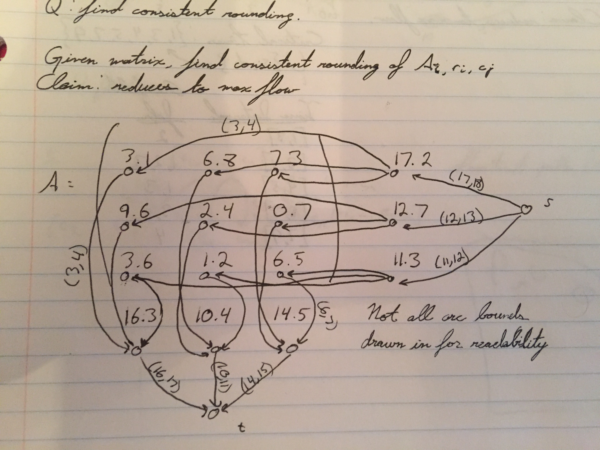

EECS 477 Notes
Table of Contents
- 1. 2015-11-18 Wednesday
- 2. 2015-11-16 Monday
- 3. 2015-11-11 Wednesday
- 4. 2015-11-09 Monday
- 5. 2015-11-06 Friday
- 6. 2015-11-04 Wednesday
- 7. 2015-11-02 Monday
- 8. 2015-10-30 Friday
- 9. 2015-10-28 Wednesday
- 10. 2015-10-26 Monday
- 11. 2015-10-21 Wednesday
- 12. 2015-10-16 Friday
- 13. 2015-10-14 Wednesday
- 14. 2015-10-12 Monday
- 15. 2015-10-09 Friday
- 16. 2015-10-07 Wednesday
- 17. 2015-10-05 Monday
- 18. 2015-10-02 Friday
- 19. 2015-09-30 Wednesday
- 20. 2015-09-28 Monday
- 21. 2015-09-25 Friday
- 22. 2015-09-23 Wednesday
- 23. 2015-09-21 Monday
- 24. 2015-09-18 Friday
- 25. 2015-09-16 Wednesday
- 26. 2015-09-14 Monday
- 27. 2015-09-11 Friday
- 28. 2015-09-09 Wednesday
- 29. 2015-09-02 Wednesday
- 30. 2015-08-31 Monday
- 31. 2015-08-28 Friday
- 32. 2015-08-26 Wednesday
- 33. 2015-08-24 Monday
1 2015-11-18 Wednesday
1.1 "Math Facts"
Fact #1:
\begin{equation} 1 - x \le \left(1 - \frac{x}{k}\right)^k \le e^{-x} \:\:\: \forall x \in R, \forall k \in Z^+ \end{equation}- in the limit as \(k\to\infty\), the right side is equality.
- when \(k=1\), the left side is equality.
Fact #2:
Let \(x_1, x_2, \dots, x_n \in [0,1]\), s.t. \(\sum_{i=1}^n x_i \ge \zeta \ge 0\). Then:
\begin{equation} \prod_{i=1}^n (1-x_i) \le \left(1 - \frac{\zeta}{n}\right)^n \end{equation}We'll "sketch" the proof without fully doing it. Let's look at the case \(n=2\), \(\zeta=1\). So, we have:
- \(x_1 + x_2 \ge 1\)
- Or, \(x_2 \ge 1 - x_1\).
The expression we're interested in is:
\begin{align*} (1 - x_1)(1 - x_2) \le x_2(1-x_2) = f(x_2) \end{align*}You can maximize \(f\) by looking at its derivative, which will give you \(x_2 = \frac{1}{2} = x_1\). So, plugging that back in:
\begin{align*} (1 - x_1)(1 - x_2) \le x_2(1-x_2) \le \left(1 - \frac{1}{2}\right)^2 \end{align*}Tada! You can do this generally by induction on \(n\), but we won't.
1.2 Back to Hitting Set
Here's the ILP relaxation of the hitting set problem:
- \(\min \sum_{e \in E} c_e x_e\), (we'll call this \(c(x)\)) s.t.
- \(\sum_{e \in T_i} x_e \ge 1\)
- \(0 \le x_e \le 1\)
Earlier, we interpreted \(x_e\) as \(Pr[e\in A]\). Then, we defined a randomized algorithm to "solve" this problem. Except it didn't solve it, because its solutions weren't necessarily feasible. But hey, it performed well! So, let's look at the probability that this algorithm produces an infeasible solution. We'l start by looking at the probability that a single set \(T_i\) isn't "covered":
\begin{align*} Pr[T_i \cap A \ne \emptyset] &= 1 - Pr[\text{any member is in A}] \\ &= 1 - \prod_{e \in T_i} Pr[e \not\in A] \\ &= P - \prod_{e \in T_i} (1 - x_e^*) \end{align*}For each \(T_i\), we have \(\sum_{e \in T_i} x_e^* \ge 1\). Which means that we can say:
\begin{align*} Pr[T_i \cap A \ne \emptyset] &= P - \prod_{e \in T_i} (1 - x_e^*) \\ &\ge 1 - \left(1 - \frac{1}{|T_i |}\right) \\ &\ge 1 - \frac{1}{e} > 0 \end{align*}Now, suppose we repeat the randomized algorithm \(t\) times. Now, we know that \(e\in A\) iff \(\exists\) one trial in which \(e\in A\). Looking at the expressions above, we know that then:
\begin{align*} Pr[T_i \cap A = \emptyset] \le \frac{1}{e^t} \le \frac{1}{cp} \end{align*}That last bit holds if we choose a \(t \in \Theta(\log p)\). Now, let's define an indicator random variable \(\gamma_i\) which is 1 when \(T_i\) is not covered. Since it's an indicator RV, its expectation is just the probability of its event, which means:
\begin{align*} E[\gamma_i ] \le \frac{1}{cp} \end{align*}Now, we can talk about the expected number of sets not hit after \(t\) trials:
\begin{align*} E[\sum_{i=1}^p \gamma_i ] \le \frac{1}{c} \end{align*}This is true due to the linearity of expectation. It is not true that the \(\gamma_i\) are independent.
So, repeating the algorithm can allow us to bound the number of sets not covered and make it arbitrarily small. But, this ability comes at a cost. Let's look at the expected cost of the new solution:
\begin{align*} E[c(A)] = t * c(x^*) \le t* \text{OPTIMAL} \end{align*}This leads to the theorem that this repeated randomized algorithm is an \(O(\log p)\)-apx algorithm, and it returns a hitting set with probability \(\ge 1 - \frac{1}{c}\).
Let's summarize our algorithms for Hitting Set:
- Primal/Dual algorithm: apx \(\max |T_i |\) (for vertex cover, this is 2)
- both simple and deterministic
- Repeated Randomized algorithM: apx \(O(\log p)\)
- also simple, but randomized and has a nonzero probability of failure.
1.3 Maximum Satisfiability
- Have \(n\) decision variables, \(x_1, x_2, \dots, x_n \in \{T, F\}\).
- Have \(c_i\), a bunch of clauses over \(x_1, \dots, x_n\).
- For example, this could be \(x_1 \lor x_2\), \(x_1 \lor \lnot x_3\), or \(\not x_1 \lor x_2 \lor \lnot x_3\).
- In general, a clause may only be a disjunction of variables (or their negations).
- We would like to find a truth assignment to \(x_1, x_2, \dots, x_n\) that maximizes the number of true clauses.
Let's imagine right now that each clause contains \(\ge k = 2\) literals. There is an incredibly easy approximation algorithm here: just assign \(x_i = T\) with probability \(\frac{1}{2}\). The probability of a clause not being satisfied is less than or equal to \(\frac{1}{4}\). The expected number of clauses being satisfied is \(\frac{3}{4}p\), (where \(p\) is the number of clauses), and you can't do better than \(p\). So this is a \(\frac{3}{4}\) apx algorithm. But it's not so good when \(k\) is 1.
2 2015-11-16 Monday
2.1 Hitting Set
- Given \(E\), \(c_e \ge 0 \:\: \forall e \in E\), \(T_1, T_2, \dots, T_p \subseteq E\)
- Find \(A \subseteq E\) w/ min \(c(A) = \sum_{e \in A} c_e\)
- such that \(A \cap T_I \ne \emptyset, \:\: (i=1,2,\dots,p)\)
- An example of this problem is vertex cover.
An ILP for this:
- \(x_e\) is 1 if \(e \in A\), or 0 otherwise.
- Minimize \(c_{opt}\) subject to constraints based on the \(T\) sets.
The linear relaxation would allow \(x_e\) to take any value between 0 and 1. The dual involves some variables \(y_i\) for \(i=1,2,\dots,p\). Complementary slackness conditions:
- \(y_i \left(\sum_{e \in T_I} x_e - 1\right) = 0\)
- \(x_e \left(\sum_{i,e\in T_i} y_i - c_e \right) = 0\)
- And we want our solutions to be integral.
Unfortunately, this problem is not unimodular, so we can't expect all the conditions to be satisfied. So I guess we're just going to try to enforce the bottom two conditions. Furthermore, there is something we get when we apply integrality to the second CS condition. I guess it's nice cause we know that the value of \(x\) must be 0 or 1, which makes the conditions a bit stronger.
2.2 Primal Dual Algorithm for HS
We start with an integral primal and a feasible dual, which are relataed by complementary slackness. In MCNF, we could start with \(x=0\), and \(\pi=0\).
- \(A \gets \emptyset\) i.e. x=0
- \(y_i \gets 0 \:\:\: (i=1,2, \dots, p)\)
- while \(\exists K: T_k \cap A = \emptyset\) (that is, while x is still infeasible)
- (comment) Change x so that it's slightly "less infeasible". (In MCNF, this was pushing flow from excess to deficit).
- (comment) Update y so as to ensure complementary slacknesss. (In MCNF, π ← π-d).
- Increase \(y_k\) until \(\exists e: \sum_{i,e\in T_i} y_i = c_e\).
- \(A \gets A \cup \{e\}\) (which means \(x_e=1\)
2.3 Example
We have a graph with nodes \(a,b,c,d\), which have costs \(2,3,4,5\) respectively. We have edges \((a,b), (a,c), (a,d), (b,c), (c,d)\). It's a rectangle with a diagonal. The \(y_i\) values exist for each edge, and they are all initialized to 0.
We start with the \(T_k\) associated with the edge \((a,c)\). We increase \(y_k\) (you might say instead \(y_{ac}\)) to 2, because this is the first value that will make a vertex's CS condition switch. This causes vertex $a$'s condition to be true, so we can add \(a\) to the cover.
Next iteration, we see that there are still two edges (\((b,c)\) and \((c,d)\)). that haven't been covered yet. We wil choose \(T_k\) associated with \((b,c)\). When we increase \(y_{bc}\), the first value that makes a constraint tight is 2, making the constraint on \(c\) tight (since it already has 2 in its sum, and its cost is 4). So, we add \(c\) to the cover, which covers all the edges and terminates the algorithm.
2.4 Approximation
Theorem: Primal Dual is a max \(|T_i|\)-apx algorithm for HS.
Corollary: PD is a 2-apx algorithm for VC.
Proof of Theorem: The \(y_i\) values start at 0 and never decrease, and are always feasible (since ∑ yi < ce\). \(e\) is added to \(A\) when \(\sum_{i:e\in T_i} y_i = c_e\).
\begin{align*} c(A) &= \sum_{e \in A} c_e = \sum_{e \in A} \sum_{i:e\in T_i} y_i \\ &= \sum_{i=1}^p y_i |A \cap T_i | \\ &\le \max_{1 \le i \le p} |T_i | \cdot \sum_{i=1}^p y_i \\ &\le \max_{1 \le i \le p} |T_{i}| \cdot c(y^*) \\ &\le \max_{1 \le i \le p} |T_{i}| \cdot c(x^*) \\ &\le \max_{1 \le i \le p} |T_{i}| \cdot c(x_{int}^*) \\ \end{align*}2.5 Randomized Approximation Algorithm
LP:
- \(\min \sum_{e \in E} c_e x_e\), s.t.
- \(\sum_{e \in T_i} x_e \ge 1\)
- \(0 \le x_e \le 1\)
Randomized algorithm idea v0.1:
- Solve the linear relaxation above. This gets you an x.
- Add \(e\) to \(A\) with probability \(x_e\).
Sadly, the glaringly obvious issue here is that in general, a solution generated by this algorithm is not guaranteed to be feasible. But how would it perform? Well, it turns out that \(E[c(A)] = c(x^*) \le c(x_{int}^*)\). Which is really good. Like, potentially better than the actual solution to the ILP. Which seems problematic :P
The problem that needs to be solved is making this algorithm feasible. And the approach will be selecting a number \(t\) of trials where we will choose whether to add \(e\) to \(A\). This will allow us to reduce the probability of infeasibility, (which sadly increases the expected cost, but ya gotta do what you gotta do). There will never be a point where the probability of infeasibility of 0.
3 2015-11-11 Wednesday
3.1 Game Tree Evaluation (cont)
Same problem setup - binary tree, alternating min/max, and 0/1 leaves. Recall from last time:
- Not proven, but intuitive: for any deterministic algorithm, I can find a labelling that will force the algorithm to visit every single leaf node.
- We viewed this as a game situation where the algorithm and the input were adversaries. In this view, a randomized algorithm could be viewed as a mixed strategy as opposed to any single deterministic (i.e. pure) strategy.
- Finally, we were attempting to quantify the expected worst case number of leaves visited, by defining it recursively. We're looking at a tree with "min" at the top of each round.
Expected visits for the max layer:
- If max evaluates to 0: then E[# leaves] = \(2W(k-1)\).
- If max evaluates to 1: then E[# leaves] \(\le \frac{3}{2} W(k-1)\).
Now we need to try to quantify \(W(k)\), so we look at the min layer (above the max layer).
- If min evaluates to 0: then at least one child max evaluates to 0.
- With at least 0.5 probability, the algorithm finds it:
- \(W(k) \le \frac{1}{2}[2(W(k-1))] + \frac{1}{2}[2W(k-1) + \frac{3}{2}W(k-1)]\)
- This is \(< W(k-1)\)
- If min evaluates to 1: then we know both children evaluated to 1.
- \(W(k) \le 2 * \frac{3}{2} W(k-1) = 3 W(k-1)\)
In all cases, \(W(k) \le 3W(k-1)\le 3^k = 3^{\log_4 n} = n^{\log_4 3} = n^{0.793} = o(n)\). So by randomizing, we have improved from linear in the number of leaves, to sub linear. Yay us.
Now, we would like to show that there is not a better randomized algorithm for this problem. To do this, we will use Yao's principle:
\begin{equation} \min_y \max_i H(i,y) \ge \min_j H(x,j) \forall x \end{equation}In our case, \(H(i,y)\) is the expected number of leaves visited by randomized algorithm \(y\) on input tree \(i\). Similarly, \(H(x,j)\) is the expected number of leaves visited by deterministic algorithm \(j\) on a tree labelled by probability distribution \(x\).
What Yao's principle gives us here is that our best randomized algorithm has a lower bound determined by the minimum number of leaves expected to be visited by a deterministic algorithm on any input probability distribution \(x\). Interesting.
We will label a leaf 1 with probability \(p\) and 0 with probability \(1-p\). Doesn't matter what \(p\) is. In this case, we have \(p=\frac{3-\sqrt{5}}{2}\)
Also, instead of doing mins and maxes, since we're guaranteed to have 0's and 1's, we know that max nodes are like or's, and min nodes are like ands. If we replace all nodes with nor's, we get an equivalent tree (viewed from the top). This is because \(\lnot(\lnot(a \lor b) \lor \lnot (c \lor d)) = (a \lor b) \land (c \lor d)\). Let's look at the truth table of a nor:
| a | b | \(\lnot(a \lor b)\) | probability |
| 0 | 0 | 1 | \(1-p)^2 = p\) |
| 0 | 1 | 0 | \(1-(1-p)^2\ = 1-p\) |
| 1 | 0 | 0 | same |
| 1 | 1 | 0 | same |
Since Dr. Liberatore cleverly solved a quadratic equation, we have a nice property that each node in the whole tree is 1/0 with the exact same probability distribution: \(p\) and \(1-p\). Woah.
Ok, so now we're looking at a tree of depth two, min at the top, max at the next layer, leaves labeled left to right a,b,c,d. Let a(b,c,d) be the first (second, third, fourth) grandchild(ren) visited by a deterministic algorithm.
Let's look at cases:
| Case | \(W(k)\) | Pr |
|---|---|---|
| \(a=0 \to b=0\) | \(2W(k-1)\) | \((1-p)^2 = p\) |
| \(a=0 \to b=1 \to c=0 \to d=?\) | \(4W(k-1)\) | \((1-p^2)p = p^2\) |
| \(a=0 \to b=1 \to c=1\) | \(3W(k-1)\) | \(p^2(1-p)\) |
| \(a=1 \to c=0 \to d=?\) | \(3W(k-1)\) | \(p(1-p)\) |
| \(a=1 \to c=1\) | \(2W(k-1)\) | \(p(1-p)\) |
To find the expected value of \(W(k)\), we can just sum up each case times its probability, plug it into your favorite numerical/symbolic computing system, and get back an answer. Or, we could be lazy, and try to avoid that. Guess what we're going to do? Be lazy!
We know that the final recurrence will be of the form \(W(k) = c W(k-1)\). "Your book is fearless, and actually calculated the value of \(c\)." - Dr. Liberatore.
However, we see that 3 is sort of the "mean" value, and the probability of 2 is greater than the probability of 4. So we know that \(c<3\), but more than two. If you get the exact value of \(c\) as the book did, you would find that \(W(k) = \Omega(n^{0.694})\). The exponent is \(\log_4 c\), \(c \approx 2.62\). Our estimation was right on.
This tells us that a randomized algorithm needs to examine at least that many nodes. Our randomized algorithm examines more, and it's an open problem to try to close the gap.
4 2015-11-09 Monday
4.1 Game Tree Evaluation
(continued)
Recall:
- We have a game tree, with internal nodes labeled "min" and "max" alternating layers. The leaves have payoff values of either 0 or 1.
- Some definitions:
- \(n\): number of leaves (\(=4^K\))
- \(k\): number of rounds
- \(h\): height (\(=2k\))
- Input: \(k\), labeling of leaves.
- We were doing a "game theoretic" approach to this problem, where:
- One player tries to minimize the number of node visits by designing a smarter algorithm.
- The other player tries to maximize the number of node visits by designing a devious tree.
- We realized that really any deterministic algorithm will have an input that will force it to visit every node.
- We realized that a randomized algorithm was equivalent to a "mixed" strategy, and it may present a better expected runtime
4.1.1 Pruned Depth First Search
This is essentially a depth first search where we avoid expanding branches if we already know the parent's value. Without loss of generality, any algorithm we design will be of this form. That is (according to the book): "for any algorithm that examines \(L\) leaves, there exists a pruned DFS that examines no more than \(L\) leaves." So it's a bit simpler to think of everything in pruned DFS terms anyway.
4.1.2 Game Theory Approach to Game Tree Evaluation
Question: Here's a deterministic algorithm. Show that it examines all leaves.
Answer: A labeling that forces the examination of all leaves.
We have two players:
- The Input (worst-case). Objective: maximize \(n\).
- Strategies: \(S^1 = \{(0,0,0,0), \dots, (1,1,1,1)\}\)
- Some are not useful at all (like the first and last)
- So strictly less than 16 (or 15) strategies in the case of \(k=1\).
- The Algorithm: Objective: minimize \(n\)
- Strategies: \(S^1 = \{(L,L,L), \dots, (R,R,R)\}\).
- Each is an assignment of the "first" direction to each internal node.
- These are all unique and potentially useful strategies, so exactly 8.
4.1.3 Randomized Algorithms
RA's base their decisions on a random number generator.
Examples:
- for Game Tree Evaluation, choose a strategy in S2 uniformly at random, and use it.
- always use the first strategy (an RA doesn't have to use its RNG).
- choose a strategy in S2 at random, with any probability distribution over S2.
This already feels quite similar to mixed strategies!
Note: random ≠ arbitrary. In depth first search, we arbitrarily select an outgoing edge to expand. That doesn't mean we're doing it at random. An arbitrary selection is just a decision made ahead of time, and a random with arbitrary decisions will always run the same, and may have a worst case input.
Anyway, now that we're looking at this problem as a game, we should also note that the number of strategies of either player is exploding exponentially as a function of the number of rounds. So we can't expect to be able to use a linear program to come up with a maximized worst case mixed strategy. But we can still use game theory stuff (such as Yao's principle) to help.
4.1.4 Worst Case
Ok, our previous initial randomized algorithm was to select a strategy from \(S^1\) uniformly at random. This is equivalent to, when visiting an internal node, go L/R with probability 0.5.
Let \(W(k)\) be the worst case number of leaves examined by randomized algorithm in the expectation (\(k\): number of rounds).
- Let's look at a "max" node, which will finally evaluate to 0. We know that both nodes must have been evaluated, so \(W(k) = 2 W(k-1)\).
- Now let's look at a "max" node, which will finally evaluate to 1. This means that at least one of the children will evaluate to 1. With at least 0.5 probability, we will find it, and have \(W(k) = W(k-1)\), and with no more than 0.5 probability, we won't find it, and get \(W(k) = 2W(k-1)\). So, the expected worse case is \(W(k) \le \frac{3}{2} W(k-1)\).
5 2015-11-06 Friday
5.1 Two Person Zero Sum Games (cont)
Last time, we defined TPZSGs, and saddle points, and we talked about mixed strategies. We also formulated the problem of designing a mixed strategy to maximize a player's worst case payoff:
\begin{align*} \max v, &\text{ s.t.} \\ \sum_{i=1}^n H(i,j) x_i &\ge v \:\:\: j=1,2,\dots,m \\ \sum_{i=1}^n x_i &= 1 \\ x_i &\ge 0 \:\:\: i=1,2,\dots,n \end{align*}The dual:
\begin{align*} \min w, &\text{ s.t.} \\ \sum_{j=1}^m H(i,j) y_j &\le w \:\:\: i=1,\dots,n\\ \sum_{i=1}^m y_i &= 1 \\ y_i &\ge 0 \:\:\: j=1,\dots,m\\ \end{align*}Would you look at that! The dual is the exact same thing except for the other player. An due to duality, we know that \(v^* = w^*\), so they will result in the same value. This is Loomis's Lemma (this guy Loomis proved it before we knew about LP duality, so good for him).
We can take the constraints of the dual and sum them up like this to get a new expression (for any \(x\)).
\begin{align*} \sum_{i=1}^n x_i \sum-{j=1}^m H(i,j) y_j^* &\le \sum_{i=1}^n x_i w^* \\ \sum_{i=1}^n \sum_{j=1}^m x_i H(i,j) y_j^* &\le w^* \end{align*}And similarly for the primal:
\begin{align*} \sum_{j=1}^m \sum_{i=1}^n x_i^* H(i,j) y_j \ge v^* \end{align*}Combining these (and substituting in \(x^*\) and \(y^*\) respectively, we have:
\begin{equation} v^* \le \sum_{i=1}^n \sum_{j=1}^m x_i^* H(i,j) y_j^* \le w^* \end{equation}By definition, that quantity in the summation is \(H(x^*, y^*)\), and by duality, we know that \(H(x^*, y^*) = v^* = w^*\). This leads us to the inequality:
\begin{equation} H(x,y^*) \le H(x^*, y^*) \le H(x^*,y) \end{equation}This leads to the theorem (Von Neuman): Every 2 person zero sum game has a (mixed) saddle point.
5.1.1 Yao's Principle
This is a restatement of Loomis's lemma, with a rather obvious addendum. And then we put this into two inequalities that look a bit less obvious.
\begin{align*} \max_x \min_j H(x,j) &\le \max_i H(i,y) \forall y\\ \min_y \max_i H(i,j) &\ge \min_j H(x,j) \forall x \end{align*}And I guess that is Yao's Principle. It is useful for when you want to put an upper bound on the \(v^*\) the optimal payoff. You create a \(y\) that has \(\max_i H(i,y) \le b\).
5.1.2 Example Time
Game Tree Evaluation:
- Input: game tree. The game tree root is a maximizing node, its children are minimizing, and the next level are maximizing, etc. The leaves are labeled with 0 or 1. The tree has degree \(d\), and \(k\) rounds (which means that the height of the tree is \(2k\)). In our example, \(d=2\).
- Output: \(x\), the value at the root node.
We would like an algorithm to evaluate this tree, and we would ilke it to minimize the number of leaves visited (which is roughly equivalent to minimizing runtime).
The total number of leaves in this tree is \(4^k\).
Depending on the tree, there could be a node that will allow you to skip visiting other nodes. But with a deterministic algorithm, you can always design a worst-case input that will "hide" that information for as long as possible.
This already is similar to game theory stuff. We are one player (trying to find a worst-case input), and our algorithm is the other player (trying to terminate as quickly as possible).
6 2015-11-04 Wednesday
6.1 Two Person Zero Sum Games
Recall: a TPZSG is a game with 2 players, and the payoff of player 1 is the opposite of the payoff of player 2. We will define \(H(i,j)\) to be the payoff for player 1 of strategies \(i\), \(j\).
Definition: A saddle point is strategies \(i^*\) (first player), \(j^*\) (second player) s.t.:
- \(\forall i \in S^1\), \(\forall j \in S^2\): \(H(i, j^*) \le H(i^*, j^*) \le H(i^*, j)\)
That is, when player 1 knows player 2 is using \(j^*\), no strategy will do better than \(i^*\). And vice versa.
Example:
| 1: | 2: | 3: | |
| 1: | 3 | 4 | 3 |
| 2: | 2 | 0 | 1 |
Saddle point: \(i^* = 1\), \(j^* = 1\), with a payoff of 3.
There is not always a saddle point!
Assume ∃ saddle point \((i^*, j^*)\):
\(\forall \min_j H(i,j) \le H(i,j^*) \le H(i^*,j^*)\)
\(\max_i \min_j H(i,j) \le H(i^*, j^*) \le \min_j \max_i H(i,j)\)
When there is a saddle point, these inequalities are actually strict inequalities! Since you would simply choose \(i^*\) and \(j^*\).
6.2 Saddle Points for Mixed Strategies
Definition: A saddle point \((x^*, y^*)\) has the property that \(\forall x,y H(x, y^*) \le H(x^*, y^*) \le H(x^*, y)\).
This is pretty much exactly the same as previously, except \(H\) is now an expectation over a probability distribution.
6.3 Something Else
From the point of view of player 1, I expect the worst (i.e. minimizing my playoff) pure strategy from player 2. I would like to formulate a mixed strategy to play the game that maximizes my (expected) "profit". Let \(x_1, x_2, \dots, x_n\) be probabilities of strategy \(i \in S^1\). If player 2 plays \(j\) (I don't know that he will!):
\(H(x^*, j) = \sum_{i=1}^n x_i H(i,j)\)
My worst-case payoff for any strategy that player 2 can play is:
\(\min_j H(x^*, j) = \min_j \sum_{i=1} x_i H(i,j)\)
I would like to maximize my own worst-case payoff (since I know player 2 will try to minimize my payoff). That is:
\(x^* = \arg \max_x \min_j \sum_{i=1}^n x_i H(i,j)\)
How do we find this? Linear programming. We create a constraint for every strategy \(j\) can have: \(\sum_{i=1}^n x_i H(i,j) \ge v\). We want to maximize \(v\), our minimum payoff. We also need to ensure that \(\sum_{i=1}^n x_i = 1\)., and \(x_i \ge 0 \forall i\). The overall LP:
- \(\max v\), s.t.
- \(-\sum_{i=1}^n x_i H(i,j) + v \le 0 \:\: \forall j\)
- \(\sum_{i=1}^n x_i = 1\)
- \(x_i \ge 0 \:\: \forall i\)
Dual:
- \(\min w\), s.t.
- \(-\sum_{j=1}^m H(i,j) y_j + w \ge 0\)
- \(\sum_{i=1}^m y_i = 1\)
- \(y_j \ge 0\)
7 2015-11-02 Monday
7.1 Dr. Liberatore's Homework
Last time we talked about games in Behavioral (Extensive?) form, and translating them into Strategic form. We are still looking at the game tree where Player 1 has choices L and R, and then Player 2 chooses L or R after that.
- \(S^1 = \{L, R\}\)
- \(S^2 = \{(L,L), (L,R), (R,L), (R,R)\}\)
- where (x,y) means: if player 1 played L, then x. If player 1 played R, then y. (I think I missed this part last lecture!)
The probability you assign to \(S^2\) is the product of the conditional probabilities of each move. So say player 2 will move left with probability \(1/2\) when player 1 moves left, and left with probability \(3/4\) if player 1 goes right. In this case, the probability of strategy \(s^2=(L,L)\) is \(\frac{3}{8}\).
Computing the probability of each of the payoffs can be done with this setup, you just have to make sure that you add up probabilities for both strategies that allow a certain branch to take.
Given a game in extensive form:
- Wlog the payoff leaves are distinct (if not, add a player who never gets to move and whose payoff is different from leaf to leaf).
\(Pr[H(l)]\). If you have a path from the root to a payoff, then the probability is:
\begin{equation} Pr[H(l)] = \prod_{e \in \text{Path root} \to l} p(e) \end{equation}Here, \(p(e)\) is the probability that edge \(e\) is chosen. We can subdivide this into terms for each player:
\begin{equation} Pr[H(l)] = \prod_{e \in \text{Path root} \to l} p(e) = \prod_{i=1}^n \prod_{e \in \text{Path root} \to l, e \text{chosen by player } i} p(e) \end{equation}When you transform the game to strategic form, a strategy set will be the set of all possible choices for all the players. To compute the probability of getting to a certain payoff, you do the following:
\begin{equation} Pr[H(l)] = \prod_{i=1}^n Pr[\text{player }i\text{ contemplates }e_1, e_2, \dots] \end{equation}Which evaluates to the same probability.
7.2 Our Homework
7.2.1 MCNF and Max Flow
Can't have negative upper bounds! For the nurse problem, you had to maximize the number of unused nurses, not try to maximize the negative of the number of nurses used.
7.2.2 Successive Shortest Paths
Negative reduced costs should not happen, they indicate an error in your work. That's fine if you encounter that and recognize it, but it sounds like a lot of people got negative reduced costs.
Each iteration, you have \((c_{ij}^\pi, r_{ij})\) for each arc, and \((e_i, \pi_i)\) for each node \(i\).
- You compute the shortest path using the reduced costs. This assigns \(d_i\) values.
- You determine the shortest path and augment flow.
- You draw a new network. The $πi$'s are updated by \(\pi_i - d_i\).
- The topology is changed to to the augmentation.
- However, the \(c_{ij}^\pi\) are always recomputed with \(c_{ij}^\pi = c_{ij} - \pi_i + \pi_j\), not using the old \(c_{ij}^\pi\)
8 2015-10-30 Friday
8.1 Games (strategic form)
- \(N=\{1,2,\dots,n\}\) players
- \(S^i\) = set of pure strategies of \(i\)th player.
- Payoff function \(H: S^1 \times S^2 \times \dots \times S^N \to R^N\)
- \(\vec{s} \in S^1 \times S^2 \times \dots \times S^N\) strategy profile
- \(H_i(s)\): payoff of \(i\)th player.
8.2 Mixed Strategies
- Mixed strategy for \(i\)th player:
- \(x^i\): probability distribution over \(S^i\).
- Mixed strategy profile:
- \(\vec{x} = (x^1, x^2, \dots, x^n)\)
- Strategy profile \(\vec{s} = (s_1, s_2, \dots, s_n)\) has probability \(\vec{x}(\vec{s}) = x^1(s_1)x^2(s_2) \dots x^n(s_n)\).
- Expected payoff:
- \(H(\vec{x}) = \sum_{s\in S^1 \times S^2 \times \dots \times S^N} \vec{x}(\vec{s}) H(\vec{s})\)
8.3 Games (Behavioral Form)
There is a tree that shows what the players can do. Say, the first level is player one, and there is a branch for each move player one can do. Then, the next level is for the next player, and at each "child node" game state, there is a branch for each move the player can make.
At the leaves of the tree you have the payoff function.
- The behavioral form is probably a bit more intuitive. It represents players' moves as sequential, whereas the strategic form doesn't impose that.
- The book has a proof that the behavioral form and strategic form are equivalent. But we won't be doing much with behavioral form, so we'll just do an example of one.
Our example of behavioral form was a binary tree with two levels, where player one would first choose between left and right, and then player two would choose between left and right as well.
We had a bit of a disagreement on how to represent player two's set of pure strategies, and its probability distribution. Dr. Liberatore represented \(S^2 = \{LL, LR, RL, RR\}\), and created a probability distribution over that. I disagree; I think that you should represent \(S^2=\{L, R\}\), and that \(x^2\) is just conditioned on \(x^1\). But, we spent a lot of time on this dispute without getting anything done, so we moved on.
8.4 Two person zero sum game
- \(n=2\)
- \(H_1(\vec{s}) = -H_2(\vec{s})\)
This means that the first playe'rs maximization is the second player's min.
- There is/(may be) a saddle point \((i^*, j^*) \in S^1 \times S^2\).
- \(H(i,j^*) \le H(i^*,j^*) \le H(i^*,j)\), \(\forall i \in S^1, j \in S^2\)
- If player two plays \(j^*\), then player 1 wlog plays \(i^*\).
- If player one plays \(i^*\), its payoff is guaranteed to be \(\ge H(i^*, j^*)\). It could be more if player two makes a mistake.
- There doesn't have to be a saddle point, I guess. For instance, the matching pennies game doesn't have a saddle point.
9 2015-10-28 Wednesday
9.1 Capacity Scaling (cont)
The algorithm:
- First, set a flow \(x \gets 0\), \(\pi \gets 0\)
- \(\Delta \gets 2^{\lfloor\log U\rfloor}\)
- while \(\Delta \ge 1\)
- Here, we maintain the invariant:
- foreach \((i,j) \in E\):
- if \(c_{ij}^\pi < 0\), then arc reversal
- SSP(\(\Delta\))
- \(\Delta \gets \Delta / 2\)
- The algorithm holds the loop invariant that \(c_{ij}^\pi \ge 0 \:\:\: \forall (i,j) \in E(x,\Delta)\).
- SSP(\(\Delta\)) terminates when either \(E(\Delta) = \emptyset\) or \(D(\Delta) = \emptyset\). So either \(0 \le e_i < \Delta\) or \(0 \ge e_i > -\Delta\). This means that the total excess ≤ \(n\Delta\).
- After we modify \(\Delta\), the total excess ≤ \(2n\Delta\).
- However, the arc reversals introduce a worst case total of \(2m\Delta\) excess, so at the beginning of SSP, we get a total excess ≤ \(2(n+m)\Delta\).
- At \(\Delta=1\), \(G(x,\Delta) = G(x)\), so we are solving the original residuals.
- We can think of CS as a logarithmic number of scaling phases to prepare for \(SSP(1)\) (the original problem).
- Kinda like Shell Sort!
9.1.1 Runtime
The original SSP took \(O(nUS)\). It was based on the idea that you would send (in the worst case) 1 unit of flow each time, so you would do \(nU\) augmentations, multiplied by \(S\), the shortest path time. We have changed our SSP algorithm so that it pushes \(\Delta\) units of flow at each iteration. We said above that at the beginning of SSP, the total excess ≤ \(2(n+m)\Delta\). By \(2(n+m)\) iterations, we should have excess set to 0. So, the runtime is \(O((n+m)S)\) for each SSP, and the total runtime is \(O((n+m)S\log U)\). (for the record, \(m\) is the number of edges). This means that capacity scaling is in fact a polynomial time algorithm!
9.2 Max Flow Min Cut
Suppose you have a source vertex, and a network without costs but with capacities. The maximum flow from \(s\) to \(t\) is equal to the min cut that separates \(s\), \(t\). A cut is defined as a partition of the set of vertices. The min cut is the one that minimizes the value of the edges (in this case, capacities) that span the partition. It actually really makes sense that max flow is equal to min cut, because the min cut is like the smallest "pipe width" you can send flow through.
Unfortunately, in order to solve min cut you pretty much have to solve max flow. So there isn't a huge breakthrough due to this property. It's just interesting and sometimes useful.
9.3 Game Theory!
We have a game where a professor puts a coin under a cup, and a student guesses whether it's heads or tails. If the student guesses correctly, they get a point and the professor loses one. Otherwise, the professor gets a point and the student loses one. To summarize:
| Student Guesses Heads | Student Guesses Tails | |
| Professor Picks Heads | Professor-1, Student+1 | Professor+1, Student-1 |
| Professor Picks Tails | Professor+1, Student-1 | Professor-1, Student-1 |
Here is a theoretical definition of a game (in strategic terms):
- Set \(N=\{1,2,\dots,n\}\) players.
- Set \(S^i \) of pure strategies for the \(i\textsuperscript{th}\) player.
- Payoff function \(H: S^1 \times S^2 \times \dots \times S^n \to R^n \)
- A strategy profile: \((s_1, s_2, \dots, s_n)\)
- \(H_i(s_1, s_2, \dots, \s_n)\) is the payoff for player \(i\)
In this coin flipping game, there are two players (player one is professor, player two is student), and \(S^1=S^2=\{h,t\}\). The table above summarizes the payoff, but I'll do it again in terms of the players and strategies again.
| s2=h | s2=t | |
| s1 = h | (-1, +1) | (+1,-1) |
| s2 = t | (+1, -1) | (-1,+1) |
Def: A mixed strategy of player \(i\) is a probability distribution over \(S^i \).
- \(\vec{x}\): mixed strategy profile
- \(\vec{x} = (x_1, x_2, \dots, x_n)\)
- \(Pr[s] = x_1(s_1)x_2(s_2)\dots x_n(s_n)\)
10 2015-10-26 Monday
10.1 Runtime of Successive Shortest Paths
- Worst case complexity, as a function of \(n\), is sometimes tricky.
- We talk about it in terms of "input size", with any reasonably efficient encoding.
- Some things that look polynomial (e.g. \(n^k \)) are not, because \(k\) is an input to the problem.
- Some things that don't look polynomial (e.g. \(n \log n\)) are, because they are bounded above by a polynomial function (e.g. \(n^2 \)).
- So, with that in mind, let's look at the runtime of SSP.
The runtime is \(O(n \times U \times S)\), where:
- \(n\) is the number of vertices
- \(U = \max_{i\in V} \{|b_i |\}\)
- \(S\) is the shortest path runtime
This is not polynomial! Let's look at the terms. We'll assume \(S\) is fine. To represent the graph, we need at least \(n\) bits (probably some constant multiple of \(n\), for the edges and things). So, \(n\) is an input size, and the \(n\) term is polynomial.
However, \(U\) is not an input size. It's an input number. It's completely unrelated to the storage of the graph and the input size. You could make it whatever you'd like. Because of this, you only need \(\log_2 U\) bits to store it. Thus, \(U\) is exponential in the input size. (A useful counterexample - if \(U=2^n \), then it's \(O(n2^n S)\)).
It's a pseudo polynomial time algorithm. If we represented \(U\) in unary, it would be polynomial. But that's not a reasonably efficient encoding.
10.2 Capacity Scaling
- \(\Delta = 2^{\lfloor\log U\rfloor},\dots, 2, 1\)
- \(E(\Delta) = \{e_i \ge \Delta: i \in V\}\)
- \(D(\Delta) = \{e_i \le -\Delta: i \in V\}\)
- \(G(x,\Delta) = (V, E(x,\Delta))\) - the residual network w.r.t. \(x\), w/ edges \(r_{ij} \ge \Delta\).
The idea of this algorithm is that we want to solve the biggest supplies and demands first.
SSP(Δ):
- Input: \(G(x, \Delta)\) s.t. \(c_{ij}^\pi \ge 0 \:\:\: \forall (i,j) \in E(x,\Delta)\)
- \(E(\Delta) \gets \{e_i \ge \Delta: i \in V\}\)
- \(D(\Delta) \gets \{e_i \le -\Delta: i \in V\}\)
- while \(E(\Delta), D(\Delta) \ne \emptyset\):
- choose \(k \in E(\Delta)\), \(l \in D(\Delta)\)
- find shortest path \(P: k \to l\) in \(G(x, \Delta)\) w/ \(c_{ij}^\pi \)
- send \(\Delta\) units of flow along \(P\).
- \(\pi \gets \pi - d\)
- update \(x\), \(E(\Delta)\), \(D(\Delta)\), \(G(k,\Delta)\).
Thinking about this algorithm, we see that each iteration of this will not necessarily remove an edge from the residual. It could just drop that node out of \(E(x,\Delta)\), while still keeping its residual greater than 0. So, we need the capacity scaling algorithm below:
Capacity Scaling:
- \(x \gets 0, \pi \gets 0\)
- \(\Delta \gets 2^{\lfloor\log U\rfloor}\)
- while Δ ≥ 1:
- for each \((i,j) \in G(x)\):
- if \(c_{ij}^\pi < 0\) then arc reversal
- SSP(\(\Delta\))
- \(\Delta \gets \Delta / 2\)
- for each \((i,j) \in G(x)\):
- Claim: \(c_{ij}^\pi \ge 0 \:\:\: \forall (i,j) \in E(x,\Delta)\) throughout SSP(\(\Delta\)).
- Proof: similar to SSP but \(G(x, \Delta)\) …
- Sketch: if we have an edge that is in \(E(x, \Delta)\) but not \(E(x, 2\Delta)\), we cannot guarantee the claim. But an arc reversal will fix this…
Runtime: \(O(n \times \log U \times S)\)
- How do we get that? Let's look at the total excess right after we adjust
\(\Delta\). Due to the termination condition of SSP, we have:
- either \(\forall i \in V: 0 < e_i < 2\Delta\),
- or \(\forall i \in V: 0 > e_i > -2\Delta\).
- These imply:
- either: total excess \(\le 2n\Delta\)
- or: total deficit \(\ge -2n\Delta\)
11 2015-10-21 Wednesday
11.1 MCNF Algorithms
Assumptions
- All data is integral (this implies that solutions are integral as well).
- An "integral part" of why the solutions are all integral.
- \(c_{ij} \ge 0 \:\:\: \forall (i,j) \in E\)
- If you have a path that contains cycles, and all weights are non-negative, you're better off eliminating all cycles.
- \(\forall u,v \in V \:\:\: \exists P: u \to v\) (that is, there is a path from every node
to every other one).
- Let \(|P| \le n - 1\). Since \(c_{ij} \ge 0\):
- cost of \(P \le n C = n \max_{(i,j)\in E} \{c_{ij}\}\)
- I missed the lead up to this, but: "An optimal solution should not send flow through \(z\) if \(\exists\) another path from \(u\) to \(v\)."
11.1.1 Successive Shortest Paths
Imagine that you have a number line of the objective value. You take a feasible flow (?), then take its dual and start improving the dual until it's feasible, and then it's optimal (?).
Definition: pseudo-flow \(x\) satisfies \(u_{ij}\) but not necessarily \(b_i\).
- EG: \(x=0\). This satisfies the upper bounds, but usually not the supplies and demands.
- We can also let \(\pi=0\) in the dual. This means that the reduced costs \(c_{ij}^\pi = c_{ij} - \pi_i + \pi_j \ge 0\), and the residual is the original network. This means that \(x=0\) and \(\pi=0\) are related by complementary slackness. So this is a starting point for SSP.
Definition: \(e_i \): excess at vertex \(i\) w.r.t. pseudo flow \(x\):
\begin{equation} e_i = b_i + \sum_{(j,i) \in E} x_{ji} - \sum_{(i,j) \in E} x_{ij} \end{equation}Initially, (at \(x=0\)), \(e_i = b_i\).
Then, we define the:
- Excess vertices: \(E = \{i \in V: e_i > 0\}\)
- Deficit vertices: \(D = \{i \in V: e_i < 0\}\)
Assuming we have a feasible solution, \(E \ne \emptyset \leftrightarrow D \ne \emptyset\) (initially?).
So, if you have two vertices, one in \(E\) and one in \(D\), you want to send some flow between them. How do we update the \(\pi\) values when you come up with the new \(x\)?
Claim: Let \(x\) be pseudo-flows and \(\pi\) be node potentials, satisfying complementary slackness. We also have \(G(x)=(V, E(x))\), the residual (residuals only use upper bounds and flows, not supplies, so we can have residuals for pseudo-flows). Finally, let \(c_{ij}^\pi \) be the reduced costs for \((i,j) \in E(x)\).
- Define \(d_i\) to be the length of the shortest path from \(s \in V\) to \(i\) (\(\forall i \in V\)) in the residual, with lengths \(c_{ij}^\pi \). (\(s\) is arbitrary but fixed as some special vertex \(s \in V\)). Since \(c_{ij}^\pi \ge 0\), this is well defined.
OK, two results of all these assumptions and notations:
- \(x\), \(\pi'\) satisfy complementary slackness, where \(\pi'=\pi-d\)
- \(c_{ij}^\pi = 0 \:\:\: \forall (i,j) \in\) shortest path tree
Example (initial \(\pi = 0\))
| i | bi | di | π'i |
|---|---|---|---|
| 1 | 4 | 0 | 0 |
| 2 | 0 | 2 | -2 |
| 3 | 0 | 2 | -2 |
| 4 | -4 | 2 | -3 |
| i | j | cij | uij | cij^π | cijπ' |
|---|---|---|---|---|---|
| 1 | 2 | 2 | 4 | 2 | 0 |
| 1 | 3 | 2 | 2 | 2 | 0 |
| 2 | 3 | 1 | 2 | 1 | 1 |
| 2 | 4 | 3 | 3 | 3 | 2 |
| 3 | 4 | 1 | 5 | 1 | 0 |
The shortest path tree is: (1,2), (1,3), (3,4). The (new) reduced costs for those edges are all 0. In this case, they are the only edges that have reduced costs 0, but that's not true in the general sense.
Proof: (I doubt we'll have time to finish this bad boy)
- Proof of the first part (\(x\), \(\pi'\) satisfy complementary slackness):
\(d_j \le d_i + c_{ij}^\pi \:\:\: \forall (i,j) \in E(x)\) (I believe this is a Bellman-Ford inequality)
\begin{align*} c_{ij}^{\pi'} &= c_{ij} - \pi_{i}' + \pi_{j}' \\ &= c_{ij} - \pi_i + d_i + \pi_j - d_j \\ &= c_{ij}^\pi + d_i - d_j \ge 0 \end{align*}Well, that was neat.
- Proof of second part \((i,j) \in SPT\), \(c_{ij}^\pi = 0\)
- If \((i,j) \in SPT\), then…
- We have $dj = di + cij^π
- And therefore when you do the computation above, you end up with \(c_{ij}^{\pi'} = \dots = c_ij^\pi + d_i - d_j = 0\). So that was also easier than expected.
Now we're talking about CS:
- \(\alpha_{ij} (u_{ij} - x_{ij}) = 0\)
- \(x_{ij} (c_{ij}^\pi + \alpha_{ij}) = 0\)
When you have \(c_{ij}^\pi = 0\), \(\alpha_{ij} = 0\), and so both CS conditions are satisfied (for any flow \(x\)).
You can send any amount of flow along this SPT, and it will be optimal! Our job is just to find a flow that satisfies the upper bounds.
12 2015-10-16 Friday
Midterm was today.
13 2015-10-14 Wednesday
Update: Problem 5 on the homework we went over on Monday did not actually have a solution that involved shortest paths. Oops!
Friday is the midterm. (I'm a bit scared). So I guess we'll do some review.
- The "Reading List" syllabus on Blackboard contains all the topics.
- There will be four questions.
- Easier than the homework (but very similar)
- Doubtful that we will have enough time to solve them all. We won't be graded out of 100% completion.
- We should have enough time to "get a start" on them all and "write something meaningful".
- Doubtful that we will need to write anything in Octave.
- Open books, open notes, open electronics (w/o internet). Of course, this isn't the most helpful to you if you bring everything, because you won't have time to use it in 50 minutes.
13.1 Back to Equipment Replacement
- \(c_{ij}\): cost of operating machine from year \(i\) to year \(j\). \(1 \le i < j \le n\).
- Minimize the total cost s.t.
- At every time, the number of running machines ≥ 1.
- Last time, we got to the point where we had a graph with nodes 1 through \(n\). Each node had an arc to all the future years, with the \(c_{ij}\)'s labeled on it.
- Put a supply of 1 on 1, and a supply of -1 on n. This seems like it would
solve the problem, but it doesn't allow for us to have multiple machines
operating at one time.
- One solution would be to have a single "source" node that connects forward and backward with each year node. But this allows us to send machines "forward" in time with zero cost. Bad.
- My initial solution to that was to have a set of nodes 1' through n', with edges (i',1) through (i', i-1), and then (i, i'). This allows only backward flow. This does solve the problem, but wih quadratic arcs.
- The next improvement on that was to have each "prime" node connected backward to the previous one, instead of all of the previous regular nodes. This improved it to linear number of arcs.
- Then we realized that each node could just be directly connected to its backward neighbor with cost of zero. Oops.
13.2 Back to Uniform Cost Parallel Machines
- \(n\) jobs, length \(l_i \le T\), \(\sum_{i=1}^n l_i \le TM\), where \(T\) is the time unit, \(M\) the number of machines.
- We had a max flow solution to assign job segments into time slots, now we
need to fill up the machines so that there is no overlap.
- To do this: assign the first job into the first machine. Assign the next job to the remainder of the machine's time. Then put that job's remainder onto the next machine. You know it won't overlap because the segment must be ≤ T.
- Yay.
13.3 Midterm Questions
Now we talk about the midterm.
- Mostly "solving problems"
- They will be "like" homework problems. Not necessarily "same question, different numbers". But similar in spirit.
- There could be reductions to linear programs.
- There could be reductions to shortest paths
- Should probably review your linear algebra so it's easier to
- (This is only slightly terrifying)
13.4 Final Exam
- 30-40 minute oral exam!!!
- Will be plenty of talk on concepts, explaining yourself, etc.
- (This is actually a lot terrifying)
14 2015-10-12 Monday
14.1 Homework 3 Review
Problem 1: when converting nodes with capacities into pairs of nodes without capacities, you assign the supplies to the input/output node by the following rule:
- If \(b_i > 0\), then assign it to the output node.
- If \(b_i < 0\), then assign it to the input node.
- Otherwise, it doesn't really matter, both nodes get 0.
Also on problem 1, make sure when you draw graphs you explain what your numbers mean. A good policy is to include a legend.
Finally, it's generally better to get rid of capacities first, because we don't have solid rules on how to get rid of lower bounds with nodes that have capacities.
For my case, I know I forgot to decrease the upper bound of \((c,d)\) when I removed the lower bound. My other error was putting the negative \(b_i\) on the output node.
Problem 4: The strategies for finding \(\pi_i\) were varied. Some wrote the primal, and then found the dual, and then solved it with Octave, and then used the dual solution. Others guessed and checked. Others used the \(c_{ij} - \pi_i + \pi_j \ge 0\) condition and found a feasible solution to that (which was not too hard given the number of parallel arcs). The other way was to pick a starting node from which all other nodes are reachable, and then find the shortest to each node. The negative of these values are suitable to use as node potentials. Admittedly, in my solution, I didn't show any work for the node potentials, but I used the shortest path method.
Problem 5: Here is one solution to a: 2 3 2 3 2. Here, Alice always loses no matter what she chooses. My solution is similar to that (1 6 7 5 8 4 9 3 10 2). This sort of solution may trick you into believing that if Alice has any winning strategy, the best choice is to choose the max chip. This is not true. Consider this arrangement: 10 1000 3 4. Alice should choose 4 in order to protect the 1000, forcing Bob to open it up for her to take on the next turn. This strategy requires that she remove the lower of the choices.
One way to solve part b is to formulate the solution recursively, and come up with a dynamic programming algorithm. Then do as in class and recast the dynamic programming solution as a shortest path solution.
Another way to do it would be to do game trees, where you represent each node as a series of decisions, and its children are the results of all the possible decisions from that node. But this has \(2^n\) nodes, which is pretty bad. There is also the problem that a shortest path solution will minimize the strategy of Bob, which doesn't really do what we want.
Dr. Liberatore's solution is to formulate each node in a graph as a list of chips, and make transitions a full round (Alice, Bob). We identified a similar issue to the previous strategy (where it minimizes Bob's strategy). Hopefully next class we'll get it figured out.
15 2015-10-09 Friday
15.1 Uniform Parallel Machines
You have a set of \(n\) jobs:
- \(s_i\): start time of job \(i\)
- \(d_i\): deadline of job \(i\)
It seems like the idea is to schedule each job to a time interval on a machine so that everything happens. The claim is that this reduces to Max Flow.
| Job | 1 | 2 | 3 | 4 |
| ri | 1.5 | 1.25 | 2.1 | 3.6 |
| Interval | Jobs |
|---|---|
| 1,3 | 2 |
| 3,4 | 1,2,3 |
| 4,5 | 1,3 |
| 5,7 | 3,4 |
| 7,9 | 4 |
We create a network with a source, and a sink. We create nodes for the jobs, and we create nodes for each time interval. We create arcs from the source to each time interval, with capacity of \(M * (f_i - s_i)\). Then we create nodes for each job. We create arcs from the jobs to the sink with capacity of \(r_i \). Finally, we create arcs from the intervals to the jobs, with capacity \(f_i - s_i \).
To go from a flow to a schedule: If we have \(x_{(h,k), i} > 0\), we schedule \(i\) in \([h,k]\) for \(x_{(h,k),i}\) time. We may have to do some finagling to ensure that everything fits, but we'll come back to that issue. In any case, we can also go from a schedule to a flow.
A schedule/flow is feasible if every job → sink link is at capacity.
15.2 Equipment Replacement
When you buy a machine, it operates very nicely at the beginning, but then deteriorates and you need to repair it. You'll need to repair it more and more and more as you go. At some point, it becomes cheaper to replace it with a new machine than to continue repair it.
So, say you buy a machine at time \(i\) and sell at time \(j\).
- \(c_{ij}\): total cost of operating machine from time \(i\) to \(j\). This includes the cost of purchase, minus the sell price, plus repair prices.
At least one machine must be operating at all times. The problem is to find an optimal replacement schedule. The claim is that this reduces to MCNF. We are given a discrete set of times 1 through \(n\) to buy and sell at.
You can create a network with a node for each time. Each time \(i\) is connected to each future node \(j\) with cost \(c_{ij}\). You set the supply at \(1\) to 1, and supply at \(n\) to -1. The one problem is that this doesn't allow for more than one machine to be running at a time. So, we're trying to solve that by adding a source and sink node, but things aren't working out perfectly.
16 2015-10-07 Wednesday
16.1 Max Flow Reduction: Matrix Rounding
A government agency collects data via a census, in the following matrix \(A\):
\begin{bmatrix} 3.1 & 6.8 & 7.3 \\ 9.6 & 2.4 & 0.7 \\ 3.6 & 1.2 & 6.5 \\ \end{bmatrix}Where zip codes are along the x-axis, and tax brackets are along the y-axis. Given enough such matrices to cross-reference, a nefarious individual would be able to identify exactly which members of their community are in which tax brackets. So, the agency would like to obfuscate the data in the matrix.
Create a new matrix \(B\) such that \(b_{ij}\) is either \(\lfloor{}a_{ij}\rfloor\) or \(\lceil{}a_{ij}\rceil\) However, \(B\) should also obfuscate the sums of both the columns and rows of \(A\) in the same manner (so, \(\sum_{i}b_{ij}\) should be either \(\lfloor{}\sum_{i}a_{ij}\rfloor\) or \(\lceil{}\sum_{i}a_{ij}\rceil\), and so on, for each row and column).
A ``consistent rounding'' satisfies all these constraints.
Question: Given matrix \(A\), find a consistent rounding. Claim: Reduces to max flow.
See the (hopefully) included image.

Figure 1: (Hopefully) included image.
Let \(r_i\) be the sum of row i, and \(c_j\) be the sum of column j.
The idea is to have a node for each element of \(A\), as well as nodes for the column and row sums. Then, make an arc going from \(a_{ij}\) to \(c_j\), with lower bound of \(\lfloor{}a_{ij}\rfloor_{}\) and \(\lceil{}a_{ij}\rceil\). Also, make an arc going from \(r_i\) to \(a_{ij}\) with the same upper and lower bounds.
Now, make an arc going from each \(c_j\) to a sink node \(t\). Each arc will have lower bound \(\lfloor{}c_j \rfloor\) and upper bound \(\lceil{}c_{j}\rceil\). Similarly, make an arc going from a source node \(s\) to each \(r_i\). Each arc will have upper bound \(\lfloor{}r_{i}\rfloor\) and upper bound \(\lceil{}r_{i}\rceil\).
This is sufficient to formulate matrix rounding as a max flow problem. Note that there is actually a second formulation, which reverses the directions of all the arcs.
16.2 Max Flow Reduction: Job Scheduling
The remainder of class was spent talking about the job scheduling problem, which appears to be described in full on the notes for 2015/10/09.
17 2015-10-05 Monday
17.1 Max Flow
def Max flow: G = (V, E), with \(\forall (i,j)\:u_{ij},\text{zero costs, supplies, and demands}\). One edge going from source to sink with no upper bound, -1 cost. The optimal solution will maximize the flow from source to sink.
17.2 Feasible Flow Problem
def Feasible flow: Given a network with supplies and upper bounds, show that a flow exists.
Claim: Feasible flow reduces to Max flow.
Steps:
- (remove lower bounds, if needed)
- from all sinks, put edge to t with \(u_{it}=-b_{i}\)
- to all sources, put edge from s with \(u_{si}=b_{i}\)
- set supplies/demands of all nodes to zero
- connect t to s, -1 cost, no upperbound
- Solve max flow. If all upper bounds met going into t / out of s,
(i.e. final supplies/demands are 0) then there is a feasible flow.
17.3 Reductions
To prove a reduction from one problem to another, show a 1-to-1 mapping between solutions to each problem.
Ex. Show feasible flow reduces to max flow: Proof: (\(feasible flow \Rightarrow max flow \)
- Let x be a feasible flow. Let \(y_{ij}=\begin{cases}x_{ij}\text{, if}(i,j)\in E \\ u_{ij}\text{, if}(i,j)\notin E \end{cases}\)
- We know the value of the max flow \(\le \sum u_{si}\) and the value of the y flow \(≤ ∑ ysi = ∑ bi \mathbb{1}bi ≥ 0 ≥) value of max flow. So, If val(max flow) == val(y flow), y flow is optimal.
18 2015-10-02 Friday
MCNF: special cases and applications
Taking problems and mapping them to MCNF is preferable because:
- MCNF is faster that LP
- MCNF is unimodular, so you can drop integrality constraints.
- This makes it attractive. How can we solve other problems with it?
18.1 Shortest Paths
Given:
- directed graph \(G=(V,E)\)
- \(s \in V\)
- lengths \(c_{ij}\) associated with \((i,j)\in E\).
Find the shortest path from \(s\) to \(u\). \(u \in V - \{s\}\).
I feel like after EECS 340, I don't really need to copy down the graph we're using for demonstration. So, shortest paths are a special case of MCNF.
- Set costs to the lengths of the edges.
- Lower bounds 0
- Upper bounds infinite
- Set source node supply to \(|V-\{s\}|\), and all other nodes to \(-1\).
If you get fractional solution for a single solution, you could use either flow. Note that people really don't try to use MCNF to solve shortest paths; rather, they sometimes use repeated Dijkstra's algorithm to solve MCNF (instead of LP).
- \(\min \sum_{(i,j)\in E} c_{ij} x_{ij}\), s.t.
- \(\sum_{(s,j) \in E} x_{sij} - \sum_{(j,s) \in E} x_{js} = n - 1\)
- \(\sum_{(i,j) \in E} x_{ij} - \sum_{(j,i) \in E} x_{ji} = -1\) for \(i ∈ V-\{s\})
- \(x_{ij} > 0\), for \((i,j) \in E\)
The dual:
- \(\max (n-1) \pi_s - \sum_{i \in V-\{s\}} \pi_i\), s.t.
- \(c_{ij} - \pi_i + \pi_j \ge 0\), for \((i,j) \in E\)
- π's unrestricted.
Let's look at the objective function and make a change of variable:
\begin{equation} (n-1) \pi_s - \sum_{i \in V-\{s\}} \pi_i = n \pi_s - \sum_{i\in V} \pi_i = \sum_{i \in V} (\pi_s - \pi_i) = \sum_{i\in V} d_i \end{equation}So, we change variable to \(d_i = \pi_s - \pi_i\). Above is the new objective function using the change of variable. Now we'll rewrite the whole thing using \(d_i\).
- \(\max \sum_{i\in V} d_i \), s.t.
- \(d_j \le d_i + c_{ij}\), for all \((i,j) \in E\)
The intuition is that \(d_j \) is the distance from the source to node \(j\). We are maximizing, which seems funny, but it makes sense when you realize that the constraints are holding back the whole thing. The constraints here are the Bellman-Ford optimality conditions, which are what Dijkstra's Algorithm does at every step (and of course the Bellman-Ford algorithm).
18.2 Dynamic Programming!!!!!
Dynamic programming is an algorithm design technique, not an algorithm in
itself. However, we're going to make a sweeping claim here: "all dynamic
programming is a special case of network flow". (say-whaaaaat.gif)

Figure 2: Say Whaaaaat?
Weighted Interval Scheduling: You have \(n\) intervals \((s_i, f_i), v_i \). Find the subset of non-overlapping intervals with maximum value.
Solution: \(M(i)\) is the maximum value from scheduling intervals 1, 2, …, i. We want \(M(n)\). We do know that \(M(0) = 0\). Recursively:
\begin{equation} M(i) = \max \left\{ M(i-1), v_i + M(p(i))\right\}\ \end{equation}Here, \(p(i)\) is the first predecessor interval that doesn't overlap with \(i\). The two conditions are either (1) we don't choose interval \(i\), or (2), we do choose interval \(i\). In the solution algorithm, we keep a vector of \(M(i)\) values and compute it from \(0\) up to \(n\), and that value is your optimal value.
| 0 | 1 | 2 | … | p(i) | … | i-1 | i | … | n |
| 0 | M(p(i)) | M(i-1) | M(i) | M(n) |
Imagine that in this illustration, we have arrows going from the vector slot \(i\) back to \(i-1\) and \(p(i)\).
Now, we start making broad, sweeping claims! This is just a MCNF problem! Make each element in the vector a node in a graph, and put edges from \(p(i)\) to \(i\), and \(i-1\) to \(i\). The edges are labeled with the gain you get \(-v_i\). You can then run MCNF on this, and get an optimal solution. You can do this with any Dynamic Programming algorithm that you have the recursive formulation of, and are stored in a tabular format like this.
So essentially, the dynamic programming and recursive/network way of thinking are pretty equivalent, and it usually depends on the person and how they've been thinking previously. But the solutions you come up with as a result may have slightly different advantages and disadvantages.
18.3 Circulation
Circulation problems are pretty much MCNF, except that all supplies are 0. Sometimes, you have lower bounds, so you are forced to send some flow. Of course, then you could eliminate the lower bounds as we've discussed, and then end up with a problem that has supplies and demands that are nonzero.
However, you can have problems with no supply/demand and no lower bounds, which have an optimal flow that does send some flow.
Example Network
| i | j | cij | lij | uij |
| 1 | 2 | -1 | 0 | 3 |
| 2 | 3 | +1 | 2 | |
| 2 | 5 | |||
| 3 | 4 | |||
| 3 | 1 | -2 | 4 | |
| 5 | 4 |
Next week is a regular week. Then homework solutions and midterm review.
19 2015-09-30 Wednesday
19.1 MCNF Duality
Recall from last time:
- πi: node potential at node i ∈ V
- αij = max{0, -cij^π}, (i,j) ∈ E
- where cij^π = cij - πi + πj
Here's his network from last time:
| Node | Supply | πi |
| 1 | 4 | 0 |
| 2 | 0 | -2 |
| 3 | 0 | -3 |
| 4 | -4 | -4 |
| Start | End | Cost | Upper | cij^π |
| 1 | 2 | 2 | 4 | 0 |
| 1 | 3 | 2 | 2 | -1 |
| 2 | 3 | 1 | 2 | 0 |
| 2 | 4 | 3 | 3 | 1 |
| 3 | 4 | 1 | 5 | 0 |
We have an (optimal) flow as follows:
- 2 units go 1 → 2 → 3 → 4
- 2 units go 1 → 3 → 4
Then he wrote the residual network, with πi and cij^π copied down. cij^π can be copied for the arcs that still exist, but needs to be recalculated for each new arc. However, if a new arc is the opposite of an old one, you know that \(c_{ji}^\pi = -c_{ij}^\pi\). Here are the values for the residual network.
| Node | Supply | πi |
| 1 | 0 | 0 |
| 2 | 0 | -2 |
| 3 | 0 | -3 |
| 4 | 0 | -4 |
| Start | End | Cost | Upper | cij^π |
| 1 | 2 | 2 | 2 | 0 |
| 2 | 1 | -2 | 2 | 0 |
| 3 | 1 | -2 | 2 | 1 |
| 3 | 2 | -1 | 2 | 0 |
| 2 | 4 | 3 | 3 | 1 |
| 3 | 4 | 1 | 1 | 0 |
| 4 | 3 | -1 | 4 | 0 |
The residual network can be a multigraph. If you have node \(i\) and \(j\) connected a forward and backward arc in the original network, you could have each arc causing two in the residual. If an edge \(e\) causes new edge \(f\) in the same direction and \(g\) in the opposite, then you have that \(c_e^\pi = c_f^\pi = - c_g^\pi\). We say \(e\) originates \(g\) and \(f\).
Ok. We're kinda caught up to where we were at the end of the last MCNF duality lecture. Last time we conjectured that:
Theorem: xij, πi, (αij) feasible:
xij, πi, (αij) optimal iff: \(c_{ij}^\pi \ge 0 \:\: \forall (i,j) \in E(x)\).
Here, \(E(x)\) is the arcs in the residual network.
Proof: (→) xij, πi optimal.
- This gives us:
- wlog \(\alpha_{ij} = \max \{0, -c_{ij}^pi \}\)
- complementary slackness!
- (1): \(\alpha_{ij} (u_{ij} - x_{ij}) = 0\)
- (2): \(x_{ij} (c_{ij}^\pi + \alpha_{ij}) = 0\)
- \(\forall (h,k) \in E(x)\), \(\exists! (i,j) \in E\) that originates it. \(\exists!\) means
"there exists a unique".
- Case a: xij = 0 originates (i,j) ∈ E(x)
- By contradiction, cij^π < 0, so aij > 0.
- By the complementary slackness condition (1), \(x_{ij} = u_{ij}\), which is a contradiction.
- Case b: xij = uij originates (j, i) ∈ E(k) (but not (i,j), since there is
no more flow to send forward).
- By contradiction, cji^π < 0, which means cij^π > 0.
- This means that \(c_{ij}^\pi + \alpha_{ij} > 0\) (since cij^π > 0 and αij ≥ 0).
- According to complementary slackness condition (2), \(x_{ij} = 0\), which is again a contradiction!
- Case c: 0 < xij < uij originates (i,j) and (j,i):
- By contradiction, assume \(c_{ij}^\pi < 0\). By the same argument in case a, we get xij=uij, which is a contradiction.
- By contradiction, assume \(c_{ji}^\pi < 0\), By the same argument in case b, we get xij = 0, which is a contradiction.
- Case a: xij = 0 originates (i,j) ∈ E(x)
- This completes the proof. We use the fact that xij and αij are optimal to get complementary slackness. That's the key to the proof.
Proof: (←) We know \(c_{ij}^\pi \ge 0\), \(\forall (i,j) \in E(x)\). Need to prove \(x_{ij}^\pi\) and \(\pi_i\) are optimal.
- To do this, we would want to show that for each arc (h,k) ∈ E, we have the complementary slackness conditions written above.
- Case a: xhk = 0:
- CS condition (2) follows immediately.
- Also, since \(x_{hj}=0\), we know that \((h,k) \in E(x)\), which by our initial assumption means that \(c_{ij}^\pi \ge 0\). Since \(\alpha_{hk} = \max\{0, -c_{hj}^\pi\}\), we know \(\alpha_{hk}=0\), and therefore condition (1) is also satisfied.
- Case b: xhj = uhk:
- CS condition (1) follows immediately.
- Since arc (h,k) is at capacity, we know that \((k,h)\in E(x)\). So, we know that \(c_{kh}^\pi \ge 0\). This means that in the original problem, \(c_{hk}^\pi \le 0\) (that's how we would have calculated \(c_{kh}\).
- By our definition of \(\alpha_{hk} = - -c_{hk}^\pi\), which means that condition (2) is satisfied!
- Case c: 0 < xhk < uhk:
- Now we know that both \((h,k)\) and \((k,h)\) are in \(E(x)\).
- This means \(c_{hk}^\pi, c_{kh}^\pi \ge 0\), which means \(c_{hk}^\pi = c_{kj}^\pi = \alpha_{hk} = 0\), which gives us both complementary slackness conditions!
- QED
As a recap, this proof gives us the approach of most of the MCNF algorithms. They start with a feasible flow, find the violations in the \(c_{ij}^\pi \ge 0\) condition in the residual, and update the flow to improve it.
20 2015-09-28 Monday
Looks like we're going over homework 2.
- It appears that the function
numpy.invert()doesn't actually invert a matrix. The function for that isnumpy.linalg.inv(). Who names a functioninvert(), when it doesn't actually invert a matrix? Damn. - When you have a linear program with matrix \(A\), you can show that all BFS of
that program will be integer by showing that: \(A\) has full row rank!!, and
then that \(A\) is unimodular.
- Turns out we needed to do all 8x8 bases, not 9x9 bases. In which case, checking all (10 choose 8) bases would be too much, so a script was necessary here.
21 2015-09-25 Friday
21.1 MCNF Duality
Assume for simplicity, ∀ (i,j) ∈ E, 0 < uij < ∞. This condition doesn't provide any algorithmic restrictions, it just makes our notation simpler.
- \(\min \sum_{(i,j)\in E} c_{ij} x_ij \), s.t.
- \(\sum_{(i,j)\in E} x_{ij} - \sum_{(j,i)\in E} x_ji = b_i\) for all i
- \(-x_{ij} \ge -u_{ij}\) for all (i,j).
- \(x_ij \ge 0\) for all (i,j)
The dual: this should be pretty automatic by now. We will use variables πi for the top constraint, and αij for the second constraint
- \(\max \sum_{i\in V} b_i \pi_i - \sum_{(i,j) \in E} u_{ij} \alpha_{i,j}\), s.t.
- \( \pi_i - \pi_j - \alpha_{ij} \le 0\), for all i,j
- rewrite: \(c_{ij} - \pi_i + \pi_j + \alpha_{ij} \ge 0\)
- \(\alpha_{ij} \ge 0\)
- πi unrestricted
Now that we have the dual, the next step is to ask, "what does it mean"? If we figure out what the dual means, we can learn many properties about the original problem and maybe come up with more efficient algorithms for it.
Claim: If the dual has an optimal solution, then ∃ optimal solution where \(\alpha_{ij} = \max \{0, -c_{ij}^\pi \}\).
- Definition: \(c_{ij}^\pi = c_{ij} - \pi_i + \pi_j\)
- Called the reduced costs for the arc (i,j).
- But not the same as the reduced costs as its linear program (?).
- That doesn't really matter to me since I never got the reduced costs thing anyway.
Proof: We already know that \(a_{ij} \ge 0\), and \(\alpha_{ij} \ge - c_{ij}^\pi\). The claim states that this is a strict equality, and apparently this is true becasue the profit of \(a_{ij}\) is \(-u_{ij}\), which means we need \(a_{ij}\) to be as small as possible.
Theorem: (Complementary Slackness). If \(x_{ij}\) is feasible, and \(\pi_i, a_{ij}\) are feasible, then they are optimal iff:
- \(\alpha_{ij}(u_ij - x_{ij}) = 0\)
- \(x_{ij} (c_{ij}^\pi + a_{ij}) = 0\)
Define: Excess at \(i\): \(e_i = b_i - \sum_{(i,j)\in E} x_{ij} + \sum_{(j,i) \in E} x_{ij}\)
- \(e_i=0\) in any feasible solution.
Proof: (of the complementary slackness statement above):
- We write the LP complementary slackness conditions.
- \(\pi_i e_i = 0\)
- \(\alpha_{ij} (u_{ij}-x_{ij}) = 0\)
- \(x_{ij} (c_{ij}^\pi + \alpha_{ij}) = 0\)
- The first is always true (as we mentioned above with the excess)
- The other two are the complementary slackness conditions from the theorem.
Example time (not pictured):
- He gave a network and a feasible flow.
- He claims it's optimal.
- To prove it, he'll give a corresponding solution to the dual!
- \(\pi_{j}\) is called the "node potential".
- He gave us the values for \(\pi_i\) at each node. The \(\alpha_{ij}\) follow from complementary slackness, having the values of \(x_{ij}\) and \(\pi_i\).
- We then computed the values for \(c_{ij}^\pi\), and used those to compute \(\alpha_{ij}\), and showed that they satisfy complementary slackness, and are feasible.
- Then, we wrote the residual network. Recall, you do this by replacing each edge that has a flow with an edge in the same direction, same cost, and ub is \(u_{ij}-x_{ij}\). And, you add a reverse edge with negative cost and ub is \(x_{ij}\)
- Then, we mapped the reduced costs \(c_{ij}^\pi\) onto the residual network. For the new back edges \((i,j)\), their reduced costs are just \(-c_{ji}^\pi\).
- We notice that \(c_{ij}^\pi \ge 0\) for all edges in the residual network. We denote that \(\forall (i,j) \in E(x)\).
- We make the claim that \(x_{ij}\) and \(\pi_i\) are optimal iff \(c_{ij}^\pi \ge 0\) forall edges in the residual network.
- Also, we point out that if \(c_{ij}^\pi > 0\), then that arc is a binding constraint on the flow (i.e., that arc is at capacity).
22 2015-09-23 Wednesday
22.1 MCNF: Transformations
Have an instance of MCNF, and I want to transform it into another instance which is equivalent.
22.1.1 Removing lower bounds
- If you have an arc from i to j, with bi and bj, with cost cij, and bounds (ℓij, uij).
- Create a new arc with bounds (0, uij-ℓij), and you make node i bi-ℓij, and node j has bj+ℓij.
- Essentially, this is an equivalent problem where you disregard the required flow. The cost that's eliminated is constant, so the solution to this will be the same to the solution of the original.
22.1.2 Removing upper bounds
- Again, you have i and j, with supply bi/bj, cost cij, and upper bound uiu.
- i is flowing to j, with an amount x.
- Create a new "node" that has supply -uij. Both i and j will flow into the new node. x will still flow from node i into the new node.
- The cost of the flow from i to the new node will be cij
- The cost of the flow from j into the new node will be 0.
- The supply of node i is still bi.
- The supply of j becomes bj + uij. Essentially, the flow from j to the new node will be uij - x, and when you subtract that from the supply, you will get bij + x, which is the flow from the original setup.
Example: he's doing an example I can't draw, but functionally he's taking a MCNF problem with costs and upper bounds, and getting rid of all the upper bounds. The process is as follows (for the whole graph):
- The whole network becomes a bipartite graph. Each original node is on the left, and on the right there is a node for each arc in the original network.
- For each arc on the original, you connect both nodes on the left to the corresponding node on the right.
- You set the supply on the right side node to be the opposite of the upper bound.
- The "supplying" node's arc has the same cost.
- The "receiving" node's arc gets a cost of 0.
- The receiving node has its supply increased by the upper bound.
22.1.3 Node splitting
Sometimes you try to model a LP as an MCNF? So to make the modeling better, you may want to bound the amount flowing through a node (not just the net "supply/demand").
- Split the node into two: an input node containing all the edges going in, and an output node containing all the outgoing edges.
- Connect the nodes from the input to the output, set the cost to 0, and upper bound it by the amount of flow you'd like to allow through the terminal.
- You set the input node's demand to 0, and the output node's demand to the original.
- Congrats, you've split the node!
22.2 Residual Network
If you have a feasible flow going through an instance of an MCNF problem, you can create a new problem by changing the demands at each node to be what you currently have satisfied, and creating arcs to either send back what you've already got flowing, or to go up to the maximum flow between nodes.
This new network is called a "residual network" since it represents the residual actions you can take to change the flow. It's sort of a pivot in the LP or maybe the dual. It's an action frequently taken by algorithms.
22.3 MCNF as LP
The MCNF is formulated as:
- min cT x, s.t.
- Nx = b
- x ≥ 0
Where x is a vector of arcs, cT is a vector of costs for flows on each arc. N is the node arc incidence matrix. Its rows are the nodes, and its columns are the arcs. For arc (i,j), there is a +1 in row i, and a -1 in row j, assuming the flow is from i to j.
We will call \(A\) the maximal subset of rows of \(N\) that are linearly independent. It has full row rank. It has at least two non-zero elements, which are ± 1, in each column. Then, we have the problem:
- min cT x, s.t.
- Ax = b
- x ≥ 0
If \(A\) is unimodular, then ∀ integer b, the optimal solution is an integer. Which means that the solution to the ILP version of the \(A\) LP would be the same as the solution to the LP, and integer. I guess that would be pretty cool.
Definition: A is totally unimodular iff ∀ square submatrices C of A, det C ∈ {0, ± 1}.
Claim: Totally Unimodular → Unimodular. (recall Unimodular is: ∀ bases B of A, det B ∈ {± 1}.) Proof: Well, B is a non-singular square submatrix, so its determinant must be ± 1.
So, we must prove that \(A\) is totally unimodular!
- ∀ C square submatrices k × k. We do induction on k.
- Base case: k=1. Each submatrix is 1 × 1, and either contains -1, 0, or 1, so the determinant is either -1, 0, or 1.
Induction:
- Case 1: C has a column containing all 0's → det C = 0.
- Case 2: in every column, there is a +1 and a -1. If you sum up every row, you get 0, so the matrix is singular, and det C = 0.
- Case 3: Anything else. Pick a column such that you have just a +1 or a -1. This is simply that entry (± 1), times the determinant of the submatrix that excludes that row and column. By the inductive hypothesis, the determinant of this submatrix is ∈ {0, ± 1}, so this means that det C is ∈ {0, ± 1} as well!
MCNF is unimodular!
23 2015-09-21 Monday
Same content as 2015-09-23.
24 2015-09-18 Friday
24.1 Integrality
When you have a ILP, it's normally NP-hard. However, if the optimal solution to the LP is integral, then you have the solution in polynomial time. Hooray for you. How can you check to find out if the optimal solution is integral? Apparently, using a concept called unimodularity.
For this part of the lecture, \(A\) is a \(p \times q\) matrix, with integer values, and \(rank(A)=p\).
Definition: A is unimodular iff \(\forall B\) basis, \(\det B = \pm 1\).
Theorem: \(A\) as above. Equivalent:
- (a) \(A\) is unimodular
- (b) ∀ basic feasible solution, \(Ax=b\), \(x\ge 0\) s an integer. (b integer)
- (c) \(\forall B\) basis, \(B^{-1}\) integer.
This theorem is cool because it will apply for any objective function, and any integer \(\vec{b}\). However, unimodularity is more strict than purely figuring out whether a given problem has an integer solution that is optimal.
Proof: (a) → (b)
- A basic feasible solution is \(x=(x_B, x_L)\) s.t. \(Bx_B = b\) and \(x_L = 0\).
- For all basic feasible solutions, we have \(x_L = 0\), which is integer. What about \(x_B\)? Let's figure out the ith component of \(x_B\).
- Well, it turns out that by Cramer's Rule, \(x_i = \frac{\det B_i}{\det B}\).
- We know that \(\det B_i =\) an integer (how?).
- Since \(\det B = \pm 1\), we know that \(x_i\) must be an integer. Yay (I guess).
Proof: (b) → (c)
- basis → \(B\).
- Dj: jth column of \(B^{-1}\)
- \(D_j = B^{-1} e_J\), where \(e_j\) is a vector of zeros except for index \(j\), which is 1.
- \((d_{ij}) = B^{-1}\)
- \(a_i = \left\{ \begin{array}{ll} [-d_{ij}] & \text{ if } d_{ij} < 0 \\ 0 & \text{ if } d_{ij} \ge 0 \end{array} \right.\) (where [] is ceiling function).
- This gives us a vector \(\vec{a}\).
- \(D_j + a \ge 0\)
- \(Bx = e_j + Ba\)
- \(x = D_j + a\) is a solution
- \(B(B^{-1} e_j + a) = e_j + Ba\)
- The right hand side is an integer, and \(B^{-1} e_j + a\) is apparently also an integer.
- And I guess this proves it. I'm totally lost here.
Proof: (c) → (a)
- \(\det B \det B^{-1} = 1\)
- This is because \(\det A \det B = \det AB\), and \(\det I = 1\).
- So, \(\det B = \frac{1}{\det B^{-1}}\). We know that \(B\) is integer (since \(A\) is as above, integer).
- We also know by our assumption (c) that \(B^{-1}\) is integer. This means both determinants are integers, and the only values for \(\det B^{-1}\) that make this possible are -1 and 1.
- So, \(A\) must be unimodular.
24.2 Minimum Cost Network Flow
Woo?
In minimum cost network flow, I have a graph \(G=(V,E)\) which is directed. We now call vertices nodes, and edges arcs. You have a source node and a sink node, with a certain amount of flow that needs to go through the network (e.g., 3 units must go out of the source, and into the sink).
Each arc in the network from node \(i\) and \(j\) has a cost associated with it \(c_{ij}\). It also has an \(\ell_{ij}\) that is a lower bound of flow, and an \(u_{ij}\), which is an upper bound of what can flow through the arc. The cost of a flow is the amount of flow through an arc times the cost of the arc. All flows are nonnegative.
The goal is to put the required amount of flow through the network, while minimizing the cost. The total cost is the sum for each arc of the amount of flow times the \(c_{ij}\) for that arc.
The three next steps for this problem:
- Make in into a linear program.
- Find out whether it is unimodular.
- Figure out its dual.
25 2015-09-16 Wednesday
Intro: we're getting to the core of the class. :D
25.1 Problem Setup
Problem setup:
- min cT x, s.t.
- Ax ≥ b
- x ≥ 0
Dual:
- min bT π, s.t.
- AT π ≤ c
- π ≥ 0
25.2 Complementary Slackness Proof
Definition: x, π feasible are said to satisfy complementary slackness iff:
- \(\pi_i \left( \sum_{i=1}^q a_{ij}x_{j} - b_i \right) = 0\), i=1,2,…,p, (1)
- \(x_j \left( \sum_{i=1}^p a_{ij}x_i - c_j \right) = 0\), j=1,2,…,q, (2)
Theorem: x, π feasible satisfy c.s. iff x, π are optimal.
Proof: x, π feasible → weak duality.
- bT π ≤ πT A x ≤ cT x
- First, prove cs → optimal
- Assume x, π satisfy cs.
- Sum up equation (1):
- You actually get \(\pi^T A x - \pi^T b = 0\), or \(\pi^T A x = \pi^T b\)
- Sum up equation (2):
- You similarly get \(\pi^T A x = c^T x\).
- So, you have \(\pi^T b = c^T x\).
- This means that x and π are optimal.
- Next, the other way around.
- It's basically the same proof in reverse.
- \(c^T x = b^T \pi\) (by strong duality)
- Due to the weak duality inequalities, we know \(c^T x = \pi^T A x = b^T \pi\).
- Then we can take the left and right side of the above, and take them make to summations:
- \(\sum_{i=1}^p \pi_i \left(\sum_{j=1}^q a_{ij}x_j - b_i \right) = 0\)
- (and similarly for the left side)
- Since πi ≥ 0 and the inner summation also ≥ 0, we know that each term must be equal to 0.
- So, this proves (1), and WLOG the other half of the equation proves (2).
25.3 Lagrangian Relaxation
z* = min cT x, s.t. constraints
- L(π) = min cT x + πT (b - Ax), s.t.
- x ≥ 0
Assume π ≥ 0. z* ≥ min cT x + πT (b - Ax), s.t. Ax≥ b, x≥ 0. This makes sense because the feasible region is the same, the cT x part is the same, and πT (b - Ax) will be ≤ 0. We can then further expand this to say that the right side is ≥ L(π), since L(π) expands the feasible region, meaning that the optimum value is ≤ the more constrained one.
25.4 Easily Finding the Dual
We want to find the dual of every linear program, not just the form with minimization, Ax≥b. and x≥0. We could switch the problem into this form. Let's call that plan B. Let's do this instead:
min cT x s.t.
- aiT x = bi, (i∈M)
- aiT x ≥ bi, (i¬∈M)
- xj ≥ 0, (j∈N)
- xj unconstrained, (j¬∈N)
Dual:
max bT π, s.t.
- πi unconstrained
- πi ≥ 0
- AjT π ≤ cj
- AjT π = cj
| Primal | Dual |
| min | max |
| cT x | bT π |
| aiT x = bi | πi unconstrained |
| aiT x ≥ bi | πi ≥ 0 |
| xj ≥ 0 | ajT π ≤ cj |
| xJ unconstrained | AjT π = cj |
EG: min x1 + x2, s.t.
- x1 - 2x2 = 3
- x1, x2, ≥ 0
Originally, we would have transformed it into this problem: min x1 + x2, s.t.
- x1 - 2x2 ≥ 3
- -x1 + 2x2 ≥ -3
- x1, x2 ≥ 0
Then, we get the dual from the constraints: max 3π1 - 3π2, s.t.
- π1 - π2 ≤ 1
- -2π1 + 2π2 ≤ 1
- π1, π2 ≥ 0
Finally, simplify to max 3y, s.t.
- y ≤ 1
- -2y ≤ 1
25.5 More Examples
min 2x1 + x2, s.t.
- x1 + 3x2 ≥ 4 (π1)
- -x1 + x2 = 7 (π)
Dual: max 4π1 + 7π2, s.t.
- π1 - π2 ≤ 2 (x1)
- 3π1 + π2 = 1 (x2)
- π1 ≥ 0
min x1 + 2x2 - 3x3, s.t.
- x1 + + x3 = 4 (π1)
- 2x1 - x2 + 2x3 ≤ 5
- -2x1 + x2 - 2x3 ≥ -5 (π2)
- 3x1 - 2x2 + 3x3 ≥ 7, (π3)
- x1, x3 ≥ 0
π1 is unconstrained, due to the equality. π2 and π3 are ≥ 0, due to the inequality. The dual: max 4π1 - 5π2 + 7π3, s.t.
- π1 - 2π2 + 3π3 ≤ 1 (x1)
- π2 - 2π3 = 2 (x2)
- π1 - 2π2 + 3π3 ≤ -3 (x3)
- π2, π3 ≥ 0
We'll do one with the knapsack problem, where we don't have a definite number of constraints/variables.
max ∑j=1q cj xJ, s.t.
- ∑j=1q wj xj ≤ W
- xj ≤ 1, j=1…q
- xj ≥ 0, j=1…q
For the dual, we'll take the one constraint, call it α, and the rest and call the others πi
- min W α, s.t.
- wj α + πi ≥ cj
- α, πi ≥ 0
26 2015-09-14 Monday
26.1 Homework Stuff
Problem 3 had no solution.
In problem 7, you could find many examples of optimal solutions that are actually convex combinations of two optimal basic solutions, which are not themselves basic solutions. This is not what the question asked for. It seems like the basic feasible solutions are always integer for this problem.
26.2 Duality
Strong Duality Theorem: I have a program of the form:
- min cT x, st
- Ax ≥ b
- x ≥ 0
We also have its dual:
- max bT π, s.t.
- AT π ≤ c
- π ≥ 0
The differences between these are:
- min/max
- A becomes AT
- c and b are swapped
- x becomes π
We have weak duality, that bT π ≤ πT A x ≤ cT x.
Strong Duality Theorem: Suppose that the primal (or dual) has a finite, optimal solution. Then, so does the dual (primal), and they have the same optimal objective value.
Proof: WLOG, assume that the primal has a finite, optimal solution x* (the primal and dual can be swapped and the proof is the same). Also assume WLOG x* is a BFS. First, we'll take the primal and put it into standard form:
- min cT x, s.t.
- Ax - Is = b
- x, s ≥ 0
Let \(\tilde{x}=(x,s)\), \(\tilde{c}=(c,0)\), and \(\tilde{A}=(A,-I)\). Then we can put this in even nicer looking standard form:
- \(\min \tilde{c}^T \tilde{x}\), s.t.
- \(\tilde{A} \tilde{x} = b\)
- \(\tilde{x} \geq 0\)
When we write this in "canonical form" (I seriously need to study this part of the stuff):
- \(\min (c_L^{\tilde{\pi}})^T \tilde{x}_L + \tilde{\pi}^T b\), s.t.
- \(\tilde{x}_B + \tilde{A}\tilde{x}_L = \tilde{b}\)
- \(\tilde{x}_B, \tilde{x}_L \geq 0\)
We'll call the objective function z, so we're minimizing \(z(\tilde{x})\). \(z(x^*)=\tilde{\pi}^T b\). The next thing is to look at the reduced costs. First, we know that \(c^{\tilde{\pi}} \geq 0\), because x* is optimal. Next, we know that \(c^{\tilde{\pi}} = \tilde{c} - \tilde{A}^T \tilde{\pi} =\):
\begin{align*} c^{\tilde{\pi}} &= \tilde{c} - \tilde{A}^T \tilde{\pi} \\ &= \begin{bmatrix} c \\ 0 \end{bmatrix} - \begin{bmatrix} A^T \\ -I \end{bmatrix} \\ &= \begin{bmatrix} c - A^T \tilde{\pi} \\ \tilde{\pi} \end{bmatrix} \end{align*}This gives us that \(c \geq A^T \tilde{\pi}\), and \(\tilde{\pi} \geq 0\). This tells us that the \(\tilde{\pi}\) is feasible in the dual. And then, we know that the objective value of \(\tilde{\pi}\) in the dual is \(b^T \tilde{\pi}\), which is z(x*). We know by the weak duality theorem that no π can have an objective value greater than this, so it is an optimal solution for the dual!
26.3 Complementary Slackness
Let x, π be feasible solutions. x, π satisfy complementary slackness (p+q equalities).
\begin{equation} \pi_i \left(\sum_{j=1}^q a_{ij} x_{j} - b_i \right) = 0 \end{equation}for i=1, 2, …, p
\begin{equation} x_j \left(\sum_{i=1}^p a_{ij} \pi_i - c_j \right) = 0 \end{equation}for j=1, 2, …, q
Essentially, each of these are the slack variables. So, if you look at the slackness in a constraint in one problem, and multiply it by the corresponding variable in its dual, you'll find that quantity is zero.
If the slackness \(s_i > 0\), then \(\pi_i = 0\). You can look at the \(\pi_i\) as a "price" for how much you'd be willing to "get rid" of the constraint. If your constraint is not even constraining you, you wouldn't care to get rid of it, and \(\pi_i\) is 0. On the flip side, if your slackness is 0, the \(\pi_i\) will tell you kinda how much you'd like to get rid of your constraint.
27 2015-09-11 Friday
LP canonical form.
\begin{align*} \min (c_L^{\pi})^T x_L + \pi^T b &\\ \text{s.t. } x_B + \bar{A} x_L &= \bar{b} \\ x_B, x_L &\geq 0 \\ \text{where } \pi^T B &= c_B^T \\ c^pi &= c - A^T \pi \\ \end{align*}EG:
\begin{align*} \min x_3 + x_4 + 7 &\\ \text{s.t. } x_1 + 2x_3 + 3x_4 &= 1 \\ x_2 + x_3 + 7x_4 &= 2 \\ x_1, x_2, x_3, x_4 &\geq 0 \\ \end{align*}- The basic variables are x1 and x2. You can come up with a BFS by setting x3 and x4 equal to 0, and reading off the values for the basic variables.
Thm: BFS \(\bar{x}\) is optimal iff c^π ≥ 0.
- Proof: ← last time
Proof: → (only the non-degenerate case)
∃ s . csT < 0 → \(\bar{x}\) is not optimal.
Look at the $s$th column of \(\bar{A}\), or \(\bar{A}_s\).
The ith constraint is \(x_1 + \bar{a}_{is} x_s + \mathcal{L} \text{ terms } = \bar{b}_i\).
If \(\bar{A}_{is} \leq 0 \: \forall i\) then xs can be increased arbitrarily to.
Assume ∃ i s.t. $\bar{a}is > 0
\begin{equation} \theta = \min_{i: \bar{a}_{is} > 0} \frac{\bar{b}_i}{\bar{a}_{is}} \end{equation}Since \(\bar{b}_i \ge 0\) and \(\bar{a}_{is} > 0\), we can claim \(\theta \ge 0\). However, we'll be doing the non-degenerate case, and assuming \(\theta > 0\).
More proof stuff that I really need to read about.
27.1 Duality
- Primal: min CT x s.t. Ax ≥ b, x ≥ 0.
- Dual: max bT π s.t. AT π ≤ c, π ≥ 0
Claim: dual of dual is primal.
Theorem (Weak Duality): ∀ feasible x, π, bT π ≤ ct x.
28 2015-09-09 Wednesday
28.1 Linear Programming
min cT x, s.t. Ax = b, x ≥ 0
- A p × q matrix.
- Rank(A) = p
- A = (A1, A2, A3, …, Aq)
Let \(\bar{x}\) be a feasible solution. Let \(A(\bar{x}) = \{A_i: \bar{x}_i > 0\}\). Thm: \(\bar{x}\) is an extreme point iff \(A(\bar{x})\) is a set of linearly independent vectors.
Def: (B,L) is a basis structure iff:
- (B,L) partition of {1, 2, …, q}.
- {AI: i ∈ B} is a basis for Rp
A = (B, L), x = (xB, xL), c = (cB, cL)
EG: min x1+x2+x3+x4 s.
- x1 + 2x2 + 3x4 = 1
- 4x2 + x3 + 2x4 = 2
- All x ≥ 0
Rename variables x1 to y1, x2 to y3, x3 to y2, x4 to y4:
min y1 + y2 + y3 + y4, s.t.
- y1 + 2y3 + 3y4 = 1
- y2 + 4y3 + 2y4 = 2
- All y ≥ 0
The left half of A is B, and the right half is L.
\begin{equation} y = \begin{bmatrix}y_1 \\ y_2 \\ y_3 \\ y_4 \end{bmatrix} \end{equation} \begin{equation} c = \begin{bmatrix} 1 \\ 1 \\ 1 \\ 1 \end{bmatrix} \end{equation}The top halves of these are \(y_B\) and \(c_B\) respectively.
\begin{align*} B x_B + L x_L &= b \\ x_B + B^{-1} L x_L &= B^{-1} b \\ x_B + \bar{A} x_L &= \bar{b} \end{align*}Here we're letting \(\bar{A} = B^{-1} L\) and \(\bar{b} = B^{-1} b\).
A basic solution is one where \(\bar{x_B} = \bar{b}\), or \(\bar{x_L} = 0\). A feasible basic solution is one where \(\bar{x_B} \geq 0\) as well.
Def: Simplex multipliers corresponding to \((B,L)\):
\begin{equation} \pi^T = c_B^T B^{-1} \end{equation}Let \(\bar{x} = \begin{bmatrix}\bar{x_B} \\ \bar{x_L} \end{bmatrix}\) be BFS corresponding to (B, L). The objective function at \(\bar{x}\) is:
\begin{align*} \begin{bmatrix} c_B^T & c_L^T \end{bmatrix} \begin{bmatrix} \bar{x_B} \\ \bar{x_L} \end{bmatrix} &= c_B^T \bar{x_B} + c_L^T x_L \\ &= (\pi^T B) (B^{-1} b) + c_L^T (0) \\ &= \pi^T b \end{align*}Def: Reduced costs corresponding to (B,L) = A
\begin{equation} c^{\pi} = c - A^T \pi \end{equation} \begin{equation} c^{\pi} = \begin{bmatrix} c_B^{\pi} \\ c_L^{\pi} \end{bmatrix} = \begin{bmatrix} c_B \\ c_L \end{bmatrix} - \begin{bmatrix} B^T & L^T \end{bmatrix} \pi = \begin{bmatrix} c_B - B^T \pi \\ c_L - L^T \pi \end{bmatrix} = \begin{bmatrix} 0 \\ c_L - L^T \pi \end{bmatrix} \end{equation}I guess you can also rewrite it to \(c = c^{\pi} + A^T \pi\), but I'm not writing out the vectors and matrices again. Now he's doing more stuff with the objective function.
\begin{equation} c^T x = (c^{\pi}_L)^T x_L + \pi^T b \end{equation}Once we find the basic feasible solution, the \(\pi^T b\) is pretty much fixed, and so we just need to minimize (CLπ)T xL. Now, say we look at a non-basic (i.e. in L, not B) variable xi, and look at its reduced costs.
- If ciπ ≥ 0, we would be happy to set xi = 0 (if it's feasible).
- If ciπ < 0, we would be happy to set xi = +∞ (if it's feasible).
We can see that if ∀ i ciπ ≥ 0, then the BFS is optimal. In fact, it's also true the other way around.
Thm: BFS \(\bar{x}\) is optimal iff ∀ i ciπ ≥ 0.
- Proof ←: (basically what we've been talking about)
- Proof →: is a really difficult, multi-lecture proof. We'll sketch out the non-degenerate case only, θ > 0. Next time.
29 2015-09-02 Wednesday
29.1 Review of LP
- min CT x, st.
- Ax = b
- x ≥ 0
Integer LP is same, except require that x is an integer.
29.1.1 Example
Vertex Cover Problem - given a undirected graph G, find a vertex cover of minimum size. (vc = a set of vertices that cover every edge).
We are going to convert a VC problem into ILP. The graph we have is (no diagrams, sorry): V={1, 2, 3, 4}, E={(1,2), (1,3), (1,4), (2,3), (3,4)} (undirected).
Decision variables are xi= 1, if i ∈ VC, 0 otherwise. We minimize the function x1 + x2 + x3 + x4, s.t.:
- x1 + x2 ≥ 1
- x1 + x3 ≥ 1
- x1 + x4 ≥ 1
- x2 + x3 ≥ 1
- x3 + x4 ≥ 1
- x1, x2, x3, x4 ∈ {0, 1}
In case you can't tell, there is a constraint for each edge, which basically says that at least one of the vertices on the edge needs to be 1.
29.2 Reducing Vertex Cover to ILP
More generally, the vertex cover of G=(V,E) can be transformed to ILP like this:
- Min ∑i∈V xi, s.t.
- xi + xj ≥ 1 ∀ (i,j) ∈ E
- xi ∈ {0, 1} ∀ i ∈ V
When you remove the integrality constraint from an ILP, you get the linear relaxation of the problem. In the case of this problem, we get an assignment of fractional weights to vertices such that each edge has sum ≥ 1, while minimizing the total vertex weights. It's an entirely different problem, and not really something we want.
According to the Liberator, the difference between a lot of the problems dealt with in other fields and in computer science is the addition of these "integrality constraints," which makes problems much more difficult than their continuous relatives.
29.3 "Slicing" Linear Programs
When you have the constraints Ax = b, you can think of it as aiT x = bi, where aiT is a row vector of A. This is totally linear algebra, and I'm sure it'll come in useful later in the course.
29.4 Semi Definite Programming
- Def: A real matrix A is positive (semi) definite iff ∀ x ≥ 0, xT A x > 0 (xT A x ≥ 0).
- Thm: A is positive semidefinite iff all its eigenvalues are ≥ 0.
(note to self - go over linear algebra!)
- Def: A is symmetric, positive, semidefinite -> A ≽ 0.
- Thm: A ≽ 0 iff ∃ B s.t. A = BT B. Given A, B can be found in polynomial time. B is not necessarily square, but of course BT B will be.
- Given two matrices C, X (n by m), C ⋅ X = ∑i=1n ∑j=1m cij xij.
The problem of Semi Definite Programming is:
- minimize C ⋅ X, st:
- Ai ⋅ X = bi
- X ≽ 0
29.5 LP reduces to SDP
Claim: Linear programming is a special case of (i.e. reduces to) Semi Definite Programming.
\begin{equation} X = \begin{bmatrix} x_1 & 0 & 0 \\ 0 & \ddots & 0 \\ 0 & 0 & x_q \end{bmatrix} \end{equation} \begin{equation} C = \begin{bmatrix} c_1 & 0 & 0 \\ 0 & \ddots & 0 \\ 0 & 0 & c_q \end{bmatrix} \end{equation} \begin{equation} A_i = \begin{bmatrix} a_{i1} & 0 & 0 \\ 0 & \ddots & 0 \\ 0 & 0 & a_{iq} \end{bmatrix} \end{equation}- We wouldn't want to do this in practice, since we have more efficient algorithms to LP. But it exists.
29.6 Quadratically Constrained Quadratic Programming (QCQP)
- min xT Q x + qT x
- s.t. xT Qi x + qiT x ≤ bi, i=1,2,..,p
Both the objective function and the constraints may be quadratic.
- It seems that you can reduce QCQP also to SDP.
- I guess the way to think about it is that in SDP, X = BT B, so in the decision variables you get quadratic terms. Or something.
29.7 Back to Linear Programming
Like you could slice LP constraint matrices by rows, you can also do it by columns. Split A into columns A1, A2, …, Aq. Then, you can break the constraints into: A1 x1 + A2 x2 + … + Aq xq = b.
Back when we were looking at LP the first time, we saw the feasible region as a polygon (or polyhedron), and the vertices were the extreme points, which are the candidate solutions. These extreme points cannot be expressed as convex combination of other feasible solutions. Even more exciting, Thm: All feasible solutions are convex combinations of extreme points.
Each constraint point corresponds in some way to the column breakdown shown above, which allows us to do LP is a Linear Algebra way.
Thm: A feasible solution is an extreme point iff:
- Ai corresponding to xi > 0 are independent. That is, given a point x, look at its coordinates xi, find the ones greater than 0, and check if the Ai corresponding to them are independent.
30 2015-08-31 Monday
30.1 Linear Programming (LP)
An instance of LP:
- min ∑j=1q cj xj, subject to:
- ∑j=1q aij xj ≤ bi, for i = 1, 2, …, p, and j=1, 2, …, q
- xj > 0
The constraints define X, the feasible region. You can switch a minimization problem to a maximization problem by negating the objective function. Minimization is the "standard form". You can also define the "slack variables" in the constraints, which were covered a bit more in the EECS 440 lecture on LP. EG, diet problem:
| i | Food | Energy | Protein | Calcium | Price | Max | |||||||
| 1 | Oatmeal | 110 | 4 | 2 | 3 | 4 | |||||||
| 2 | Chicken | 205 | 32 | 12 | 24 | 3 | |||||||
| 3 | Eggs | 160 | 13 | 54 | 13 | 2 | |||||||
| 4 | Milk | 160 | 8 | 285 | 9 | 8 | |||||||
| 5 | Pie | 420 | 4 | 22 | 20 | 2 | |||||||
| 6 | Pork w/ beans | 260 | 14 | 80 | 19 | 2 | |||||||
| GOALS | 2000 | 55 | 800 | min |
Decision variable is x1, so here is the problem:
- minimize, 3x1 + 24x2 + 13x3 + 9x4 + 20x5 + 19x6, subject to:
- 110x1 + 205x2 + 160x3 + 160x4 + 420x5 + 260x6 ≥ 2000
- 4x1 + 32x2 + 13x3 + 8x4 + 4x5 + 14x6 ≥ 55
- 2x1 + 12x2 + 54x3 + 285x4 + 22x5 + 80x6 ≥ 800
- 0 ≤ x1 ≤ 4
- 0 ≤ x2 ≤ 3
- 0 ≤ x3 ≤ 2
- 0 ≤ x4 ≤ 8
- 0 ≤ x5 ≤ 2
- 0 ≤ x6 ≤ 2
This isn't in standard form due to the greater than or equal to in the top 3 constraints, and the less than or equal to in the variable bounds. I guess.
What to do to get decision variables unrestricted in sign (not in std form): If you want x to be negative (or just allowed to be negative) replace it with two variables (say, y and z). Substitute x with y-z, and add the condition that y,z ≥ 0. This allows x (aka y-z) to be positive or negative, but you could add more conditions on y-z to make it how you'd like.
The graphical representation of these problems is pretty simple (when you have two variables). The constraints create a nice shaded polygon that represents your feasible region, and then you pick the vertex that maximizes the objective function.
Claim: There is always an optimal solution in an extreme point. That's worded weird. I prefer "an optimal solution is always an extreme point."
You can represent a LP instance in matrix form like this:
- min CT x
- s.t. Ax=b
- x ≥ 0
Where, x = (x1, x2, …, xq)T, c = (c1, c2, …, cq)T, A=(a11, a12, …, a1q; …; ap1, ap2, …, apq), b=(b1, b2, …, bp)T.
30.2 Integer Linear Programming
Same as ^, except that the x's must be integers. Since this is a more restricted problem, the solutions are no better than the LP solutions.
30.3 Mixed Integer Linear Programming
MILP. Really?
> Matrix I'd Like to Program - Andrew Mason
Only some of the decision variables need to be integral, others can be continuous.
30.4 Next Time, on Advanced Algorithms:
Vertex cover, formulated as ILP.
31 2015-08-28 Friday
31.1 Last Time:
Approximation algorithms have approximation ratio:
apx ratio = \(max_{I\in{}\mathscr{I}} {\frac{c(I)}{c^*(I)}}\)
A c-approximation algorithm has cost ≤ c × optimal cost on all instances I of
the problem \(\mathscr{I}\). One example is the vertex cover problem. We
covered a 2-approximation algorithm (called VCapx) that operates by
repeatedly choosing an edge, adding its endpoints to the VC, and removing all
incident edges from the graph.
We left off saying that today we would cover the proof that it is a 2-apx algorithm.
31.2 Proof
Theorem VCapx is a 2-approximation algorithm.
Proof Every edge is covered by VCapx at termination. For every one of
these edges, the algorithm adds at most two vertices to \(V'\). The optimal
solution contains at least one of these two. VCapx never considers the
same vertex twice (since it deletes incident edges). So, this is a 2
approximation algorithm.
Here's the actual text of his proof:
- Every edge is covered by
VCapxat terminates. - ∀ edge chosen by
VCapxVCapxadds 2 vertices to \(V'\)- Opt contains at least one of the two vertices
VCapxnever considers same vertex twice. (by deleting incident edges)- → edges are disjoint, → \(V'\) can be partitioned by edges added by
VCapx
- → edges are disjoint, → \(V'\) can be partitioned by edges added by
- → 2-apx algorithm
31.3 Reduction
The pipeline of reduction:
(X, c) ∈ I → (X', c') ∈ I' → x'* → x*
If the time to translate (X,c) to (X', c') is T1, and the time to translate x'* to x* is T2, then problem I reduces to *I^'* in time T1 + T2.
EG: Any maximization problem reduces to a minimization problem in O(1) time.
31.3.1 Optimal Message Passing
Given a graph G=(V,E) with probability pe (0 < pe < 1) associated to each e ∈ E. Find a spanning tree of G that minimizes the probability of failure. (The probabilities are of failure, and independent).
So, the probability of survival for the whole tree is Πe∈ T (1-pe).
We can reduce the OMP to Minimum Spanning Tree problem in linear time. We define the weight of an edge to be we = -log (1-pe). The cost of an MST is c(T) = ∑e∈ T we = ∑e∈ T log 1/(1-pe) = log Πe∈ T 1/(1-pe) = log 1/(Πe∈ T(1-pe)). Since we're trying to minimize that logarithm, and logarithms are strictly increasing functions, we also are minimizing the inside of the logarithm. This is the same as maximizing the denominator, which happens to be the probability of survival of the tree.
31.3.2 Choosing your reduction
This isn't necessarily like EECS 343 reductions, where you find the easiest reduction to do. There are entire families of problems that are special cases of each other. A problem might be able to be reduced to the simplest of these, or the most general of these. The reduction to the most general problem is usually easiest, and the reduction to the simpler problem is more difficult. The advantage of doing the harder reduction is generally a faster algorithm to solve the simpler problem. It's just a wonderful world of tradeoffs here in computer science land.
31.4 GNU Octave
- Download it via your package manager, or from the GNU website if you're a Win/Mac user.
- There is a good deal of documentation on the GNU site about how to use Octave. It looks like a less powerful Python+NumPy+Matplotlib, or maybe a less powerful (open source) Mathematica.
glpkfunction for linear programming.- First homework this afternoon, due in two weeks!
32 2015-08-26 Wednesday
32.1 Optimization Problems (cont.)
Definition: an Optimization problem is a set of instances of optimization problems (iops).
Ex. Minimum Spanning Tree (MST) - give spanning tree \(T'\) of graph \(G\). Minimize \(\sum_{e \in T'}c(e)\), where \(c(e)\) is the cost of an edge.
Ex. Vertex Cover - (Find \(V' \subseteq V\) s.t. \(\forall (e \in E)\: e \bigcap V \neq \emptyset \). V' is the vertex cover. Minimize \( \vert V' \vert\)).
32.2 Maximization problems
What about maximization problems? Well, they can reduce to minimization problems: \[ I_{max} = (X, f) \Rightarrow \tilde{I} = (X, -f) \:( \text{or sometimes }\tilde{I} = \left(X, \frac{1}{f}\right) ) \]
\(\tilde{I}\) is now a minimization problem.
32.3 Approximation Algorithms
Let I be an iop with an optimal solution \(x^*\) with an optimal value \(c(x^*) = c^*(I)\). Let \(c(I)\) be the cost accrued by running algorithm A on I. Then, the approximation ratio is: \[ R = max_I \left( \frac{c(I)}{c^*(I)}, \frac{c^*(I)}{c(I)} \right) \]
(This formulation allows us to use the same ratio function for max and min problems.)
If for any \(\epsilon > 0 \exists\:A\text{ s.t. }R = 1 + \epsilon \wedge O(n^k)\text{ w.r.t. input size} \) then \(A\) is a polynomial time approximation scheme (PTAS).
If A is polynomial w.r.t. input size and \(\epsilon\), then it is called a fully polynomial time approximation scheme.
def: a k-approximation algorithm is if its result is within k-times the minimum result. e.g. \(\forall G\:|VC| \le 2|VC^*|\) for approx vertex cover.
32.4 Approx Vertex Cover
Algorithm: Given \(G = (V,E)\)
- repeatedly
- choose \( e = (u,v) \in E \)
- \(V' = V' \cup e\)
- delete all \(d \in E\) incident to \(u,v\)
- until \( E = \emptyset \)
- return \(V'\)
Proof of correctness / 2 approx algorithm:
- Every edge covered by VC aprx at termination
- \(\forall e \in VC_{approx}\)
- VC aprx adds at most 2 vertexes to \(V'\)
- VC opt contains at least 1 of two vertexes to remain feasible
- VC aprx never considers same vertex twice because edges are removed
- edges are disjoint \(\Rightarrow\:V'\) can be partitioned by edges added by VC aprc
- therefore, 2 aprx algorithm
33 2015-08-24 Monday
- 5 books, get sections from library
- 2 tests:
- Final exam, possibly oral.
- Midterm
- 6 homeworks:
- Need to know octave
33.1 Asymptotics
Measure time complexity. Focus is on large inputs.
f(n) ∈ O(g(n)) means "f(n) ≤ g(n)"
∃ c > g, n0 > 0 s.t. ∀ n ≥ n0 : f(n) ≤ c g(n)
- f(n) = Ω(g(n)) defined: g(n) ∈ O(f(n))
- f(n) ∈ Θ(g(n)) defined: f(n) ∈ O(g(n)) and f(n) ∈ Ω(g(n))
- f(n) ∈ o(g(n)) defined: \(\lim_{n\to\infty} \frac{f(n)}{g(n)} = 0\)
- f(n) ∈ ω(g(n)) defined: \(\lim{n\to\infty} \frac{f(n)}{g(n)} =\infty\)
What is \(n\)? Input size. Sometimes it's a number of elements, or it could be multiple parameters (number of nodes, number of edges).
Sometimes we use the number of bits of the input. For example, an algorithm with input integer \(k\). The number of bits is \(n=\Theta(\log k)\). If the runtime is \(O(k)\), it looks like it's linear time. But in the number of bits, it's exponential (\(O(2^n)\)). It looks polynomial, but it's exponential. It's called pseudo-polynomial.
Formula:
\((1-\frac{x}{k})^k\), where \(x \in R\), \(k \in N^+\). We have that quantity \(< e^{-k}\), and \(\geq (1-x)\). This will be used a lot apparently.
33.2 Optimization Problems
Definition: An instance of an optimization problem is a pair \((X,f)\), where \(X\) is a set of feasible solutions, and \(f\) is an objective function. \(f\) maps from \(X\) to the real numbers. An optimal solution \(x^*\) is an element of \(X\) with the property that \(f(x^*) \leq f(x) \: \forall x \in X\).
For instance, if you have a graph and you're talking about the minimum spanning tree problem, \(X\) is the set of all MSTs, and \(f\) maps each to the sum of the edge weights in the tree.